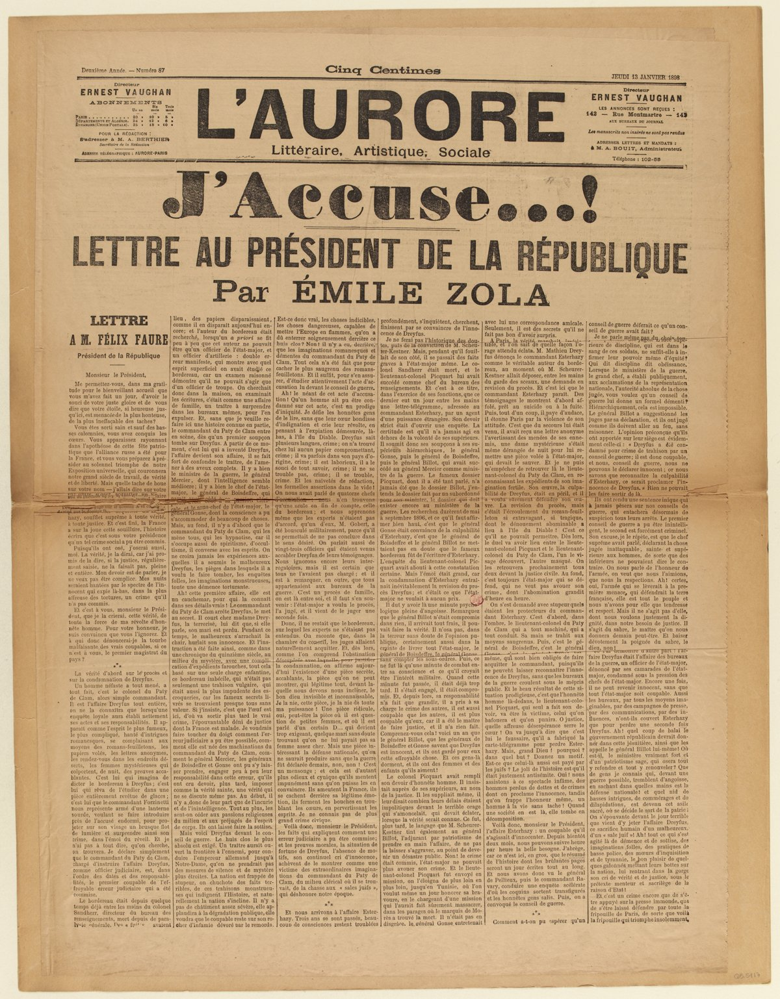
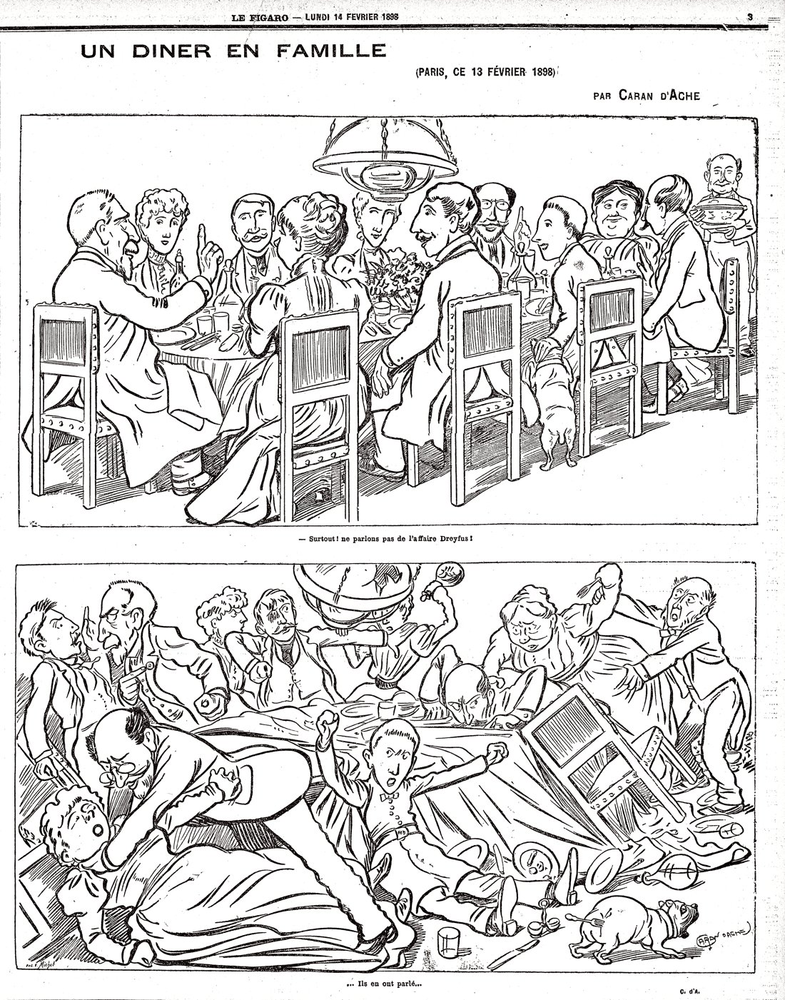

Sans JavaScript, tous les onglets restent visibles à la suite.
Présentation de la séquence
Un député parle de la misère, un romancier accuse l'état-major, un reporter décrit le bagne. Tous trois informent, et tous trois prennent parti. Cette séquence apprend à lire et à écrire l'information sans naïveté : qu'est-ce qu'un fait, un jugement, une source ? Peut-on défendre une cause sans faire dire aux faits ce que l'on veut ?
Problématique
Informer, est-ce déjà prendre parti ?
Le corpus en bref
- Victor Hugo, « Détruire la misère », 9 juillet 1849. À l'Assemblée nationale législative, le député de Paris soutient une proposition sur l'assistance publique : une conviction, des faits, un devoir.
- Émile Zola, « J'accuse… ! », L'Aurore, 13 janvier 1898. Lettre ouverte au président Félix Faure, au cœur de l'affaire Dreyfus : nous en étudions toute la fin, de « Telle est donc la simple vérité » à « J'attends ».
- La une de L'Aurore et « Un dîner en famille » de Caran d'Ache (1898). La page et l'image prennent parti à leur manière.
- Albert Londres, Au bagne, 1923. Le grand reporter au bagne de Guyane, puis sa lettre ouverte au ministre des Colonies.
- Un texte inédit, « Choisir n'est pas inventer », écrit pour la contraction de mi-parcours.
Programme et niveau
- Programme : français, classe de seconde générale et technologique, arrêté du 17 janvier 2019, Bulletin officiel spécial n° 1 du 22 janvier 2019, modifié par l'arrêté du 28 septembre 2020 (BO n° 40 du 22 octobre 2020).
- Objet d'étude : la littérature d'idées et la presse du XIXe siècle au XXIe siècle.
- Corpus : un groupement de textes autour d'un débat d'idées, qui intègre l'étude de la presse ; lecture cursive : « J'accuse… ! » en entier et la « Lettre ouverte à M. le ministre des Colonies » d'Au bagne.
- Exercices : contraction de texte, écrits argumentatifs, débat réglé avec compte rendu, écrit d'appropriation (article de presse).
- Niveau : seconde générale et technologique. Repère CECRL pour les élèves allophones : B2 conseillé ; la version dys et les lexiques permettent un accès dès B1.
- Durée : dix séances de 52 minutes, environ quatre semaines.
Les cinq directives du programme, et où elles se travaillent
1. Lire
« L'étude d'un groupement de textes autour d'un débat d'idées, du XIXe au XXIe, au choix du professeur, par exemple sur les questions éthiques, sociales [...] permettant d'intégrer l'étude de la presse et des médias. » ; « la lecture cursive d'articles, de discours ou d'essais. »
Un discours (Hugo, 1849), un article (Zola, 1898), un reportage et une lettre ouverte (Londres, 1923), une une et une caricature ; en lecture cursive, « J'accuse… ! » en entier et la lettre finale d'Au bagne.
2. Écrire
« la contraction de texte » ; « l'écrit d'appropriation (compte rendu ou analyse d'un ou de plusieurs articles, rédaction d'un article de presse sur l'un des thèmes abordés en classe [...] »
Paragraphe argumenté (séance 3), légendes (5), contraction notée (6), compte rendu du débat (9), article sourcé avec son dossier (8 et 10).
3. S'exprimer à l'oral
« le débat, qui suppose une préparation et une modération des échanges, ainsi qu'une répartition des rôles et peut faire l'objet d'un compte rendu écrit »
Lecture à voix haute d'un discours (2) et de l'anaphore de Zola (4), explication d'une décision au CDI (8), débat réglé noté avec quatre rôles (9).
4. Étudier la langue
« Plus généralement, dans l'ensemble des travaux écrits demandés aux élèves, une attention spécifique est portée à la correction de la langue, qui doit être prise en compte dans l'évaluation. »
À chaque séance, une Étude de la langue : leçon, exercices corrigés, contrôle noté de 5 à 8 minutes avec grille d'autocorrection ; partie langue séparée dans les deux évaluations ; Projet Voltaire.
5. Construire une culture littéraire et artistique
« Il peut également proposer l'analyse de peintures réalistes ou naturalistes, de photographies de presse, d'affiches, de caricatures [...]. [...] avec les professeurs documentalistes notamment. »
La Deuxième République, l'affaire Dreyfus, le grand reportage ; la une de L'Aurore, Caran d'Ache, une lithographie de 1830 ; une séance au CDI avec le professeur documentaliste.
Citations : programme de français de seconde générale et technologique, objet d'étude « La littérature d'idées et la presse du XIXe siècle au XXIe siècle » et partie « L'étude de la langue au lycée » (version consolidée publiée par Éduscol).
Objectifs de la séquence
- Distinguer rapporter, juger et interpréter ; prouver une interprétation par une citation.
- Analyser une argumentation : thèse, arguments, exemples, concession, réfutation, anaphore.
- Lire une une et une caricature : décrire avant d'interpréter.
- Contracter un texte argumentatif sans le trahir.
- Remonter d'une affirmation à son document d'origine et dire la limite d'une source.
- Débattre selon des règles ; écrire un article qui sépare les faits de sa position.
La spirale de Gorse
Elle accompagne la séquence. Six tours mènent d'une question générale à un vrai problème : un tour par séance, en séances 1, 2, 3, 4, 5 et 7. La question est à l'extérieur, la réponse attendue à l'intérieur ; à la pointe, le problème que l'article final doit affronter.
- 1Qu'est-ce qu'informer ?Dire ce qui est, à quelqu'un, avec des mots que l'on choisit.
- 2Hugo informe-t-il l'Assemblée ?Il donne des faits, mais pour obtenir une loi : l'information sert une cause.
- 3Une idée tient-elle toute seule ?Non : une thèse a besoin d'arguments et d'exemples ; l'ordre des faits persuade.
- 4Que risque celui qui accuse ?Zola signe, nomme et s'expose à la loi : prendre parti, c'est prendre un risque.
- 5La page est-elle neutre ?La une, le titre, l'image choisissent ce que l'on regarde d'abord.
- 6Le reporter peut-il seulement voir ?Londres voit, raconte, juge, puis demande : le témoin devient avocat.
À la pointe. Informer, est-ce déjà prendre parti ? Sans doute, dès que l'on choisit ses mots. La question devient alors politique et morale : comment prendre parti honnêtement, en séparant les faits de son jugement, en citant ses sources et en signant ?
Les séances
| Séance | Titre | Support | Production | Étude de la langue |
|---|---|---|---|---|
| 1 | Trois phrases, trois gestes | Hugo, ligne 5 | écrit diagnostique | Accorder le verbe avec un sujet éloigné ou multiple |
| 2 | Hugo : une voix face aux décideurs | Hugo, lignes 1 à 11, 26 à 33 | questions, lecture à voix haute | Le verbe « devoir » : obligation ou probabilité ? |
| 3 | Une idée ne tient pas toute seule | Hugo, tout l'extrait | paragraphe argumenté | Cause, conséquence, opposition dans la phrase |
| 4 | Zola : accuser en pleine lumière | Zola, fin de « J'accuse… ! » | analyse de la construction | « Accuser quelqu'un de » + infinitif passé |
| 5 | Ce que la page fait regarder | une de L'Aurore, Caran d'Ache | deux légendes | La phrase nominale et la nominalisation |
| 6 | Raccourcir sans trahir : évaluation de mi-parcours | texte T (inédit) | contraction /20 et langue /10 | partie langue /10 |
| 7 | Londres : voir, raconter, juger | Londres, « Le camp » et la lettre au ministre | analyse, correction reprise /5 | Valeurs du présent et du futur dans le reportage |
| 8 | Au CDI : remonter à l'origine | sources : Assemblée nationale, Gallica, FranceArchives | trois fiches sources, brouillon | Citer exactement et référencer |
| 9 | Débat réglé : défendre une idée, écouter une objection | tout le corpus | débat /10, compte rendu | Concéder et réfuter |
| 10 | Publier une position que l'on peut vérifier : évaluation finale | tout le corpus et le dossier | article /20 et langue /10 | partie langue /10 |
Contrat de lecture et de parole
- Droit à l'essai : une interprétation peut évoluer ; elle s'appuie sur un mot, une ligne, une observation.
- Exigence de précision : « Hugo affirme que... » n'est pas « il est établi que... ».
- Neutralité : nous analysons des textes historiques et la fabrication d'une information, sans débat partisan actuel.
- Limite : l'équilibre ne consiste pas à faire comme si une erreur judiciaire démontrée restait une question d'opinion : Dreyfus a été réhabilité par la Cour de cassation le 12 juillet 1906.
- Lire n'est pas jouer : aucun élève n'incarne un accusé, une victime ou un préjugé.
Les évaluations en un coup d'œil
| Quand | Quoi | Comment |
|---|---|---|
| Séance 1 | Diagnostic écrit | non noté, comparé à l'article final |
| Séances 1 à 5, 7 à 9 | Contrôles de langue | 5 à 8 minutes, /5 ou /6, avec grille d'autocorrection |
| Séance 6 | Mi-parcours : contraction guidée | /20, et partie langue séparée /10 |
| Séance 7 | Savoir prendre une correction | fiche notée /5 |
| Séance 9 | Débat réglé | oral /10 |
| Séance 10 | Article et dossier de sources | /20, et partie langue séparée /10 |
Sujets, grilles, corrigés : onglet Évaluations.
Ce qui a changé depuis la quatrième
« J'accuse… ! » est déjà lu en quatrième sur ce site (Informer, s'informer, déformer) : extraits, fait et opinion, procédés simples, discours rapporté, quatre questions pour vérifier une source. En seconde, on ne reprend pas ces exercices : on lit toute la fin de la lettre pour sa construction (thèse, concession, anaphore, réfutation) et le risque pris par l'auteur, on remonte aux documents d'origine, et l'on écrit soi-même un article sourcé.
Téléchargements
Fiche professeur
PDF · Word · LibreOffice
Fiches élèves, une activité par page
PDF · Word · LibreOffice
Fiches élèves en gros caractères
PDF · Word · LibreOffice
Version dys
PDF · Word · LibreOffice
Évaluations : sujets élèves
PDF · Word · LibreOffice
Corrigés et grilles (professeur)
PDF · Word · LibreOffice
Savoir prendre une correction et autocorrection
PDF · Word · LibreOffice
Les textes et documents de la séquence
PDF · Word · LibreOffice
Crédits
Image d'en-tête : Victor Adam, « Palais-Royal. Lecture du Moniteur le lundi 26 juillet à 7 heures du soir », lithographie, 1830, musée Carnavalet, Paris Musées, CC0, via Wikimedia Commons. Une de L'Aurore du 13 janvier 1898 : musée Carnavalet, Paris Musées, CC0. Caran d'Ache, « Un dîner en famille », Le Figaro, 14 février 1898 : domaine public, Gallica (BnF). Textes de Hugo, Zola et Albert Londres : domaine public.
Sources des textes : Assemblée nationale (Hugo), Wikisource et Gallica (Zola), Wikisource (Londres, édition Albin Michel). Ressource de méthode pour les adultes : Elsie Russier, « Vérifier l'information », CLEMI, 2018 (consultée, non reproduite).
© 2026 Madame Carole Paoli Pompougnac · CC BY-NC-SA 4.0
Fiches élèves en PDF Word LibreOffice
Séance 1. Trois phrases, trois gestes
Durée : 52 minutes. Compétences : LectureÉcritureOralLangue
Objectifs : distinguer trois gestes d'écriture : rapporter, juger, interpréter ; repérer les mots qui les signalent ; faire un diagnostic de l'écrit et de la langue, non noté ; entrer dans la spirale de Gorse.
Matériel : fiche élève 1 ; la ligne 5 du discours de Hugo au tableau (« je dis détruire ») ; une enveloppe par binôme avec les trois cartes A, B, C.
Déroulé minute par minute
| Minutes | Ce qui se passe | Ce que dit ou fait le professeur |
|---|---|---|
| 0 à 4 | Rituel d'entrée. Accueil à la porte, installation, date et titre dans le cahier. Au tableau, la phrase du jour : « Je dis détruire. » (Victor Hugo, 1849) | Je lis la phrase deux fois, d'une voix calme puis d'une voix résolue : « Même phrase, deux voix. Qu'est-ce qui change ? » |
| 4 à 12 | Activité 1. L'enveloppe : trois phrases sur le même discours. Les binômes classent : laquelle rapporte, laquelle juge, laquelle interprète ? Ils justifient par un mot. | « Nous allons séparer ce qui se vérifie, ce qui s'apprécie et ce qui s'explique. Nous ne classons pas des personnes : nous classons des phrases. » |
| 12 à 16 | Spirale de Gorse, tour 1 : « Qu'est-ce qu'informer ? » Réponses au tableau, puis réponse commune notée. | « Nous partons d'une question très large ; tour après tour, elle va se resserrer jusqu'à la question de la séquence. » |
| 16 à 30 | Activité 2. Diagnostic écrit (12 lignes), non noté : rapporter, juger, interpréter un événement du lycée, réel ou inventé. | « Je ne note pas aujourd'hui : je regarde votre écriture pour construire la suite. Si vous hésitez, écrivez ce que vous vérifieriez : cette hésitation est intelligente. » |
| 30 à 43 | Étude de la langue. Les accords sujet-verbe quand le sujet est éloigné ou multiple : leçon, exercices corrigés, contrôle noté /5 (6 minutes), grille d'autocorrection. | « Qui affirme quoi ? La grammaire répond : le sujet commande le verbe. » |
| 43 à 46 | Projet Voltaire (3 minutes) : accord du verbe avec un sujet éloigné ou inversé. Sans connexion : l'exercice papier de la fiche. | « Trois minutes, une règle, puis vous corrigez votre propre phrase du jour. » |
| 46 à 49 | Trace écrite : les trois gestes et leurs indices. | Je dicte la trace, puis un élève la relit. |
| 49 à 52 | Rituel de sortie. Billet de sortie : « Ce que je sais mieux distinguer qu'en entrant : ... » ; devoir noté dans l'agenda. | Je ramasse les billets à la porte ; je vérifie que le devoir est noté. J'ouvrirai la séance suivante par une réponse d'élève. |
Activité 1. L'enveloppe : trois phrases sur un même discours LectureOral
Pour l'enseignant. Distribuer les enveloppes face cachée. Faire d'abord classer en silence, puis justifier à deux. Accepter un classement argumenté qui signale une ambiguïté, et demander quelle vérification permettrait de décider.
Pour les élèves.
Voici trois phrases sur le discours de Victor Hugo. Classe-les dans le tableau et souligne le mot qui t'a aidé.
- A. Le 9 juillet 1849, Victor Hugo prend la parole à l'Assemblée nationale pour soutenir une proposition sur l'assistance publique.
- B. C'est un discours magnifique, le plus beau que Hugo ait prononcé.
- C. En refusant le verbe « diminuer », Hugo montre qu'il ne demande pas une aumône, mais une loi.
| Geste | Phrase | Mot-indice | Comment le vérifier ou le défendre ? |
|---|---|---|---|
| Rapporter (un fait que l'on peut contrôler dans un document) | |||
| Juger (une appréciation, une préférence) | |||
| Interpréter (une explication appuyée sur un indice du texte) |
Corrigé (prof)
A rapporte (date, lieu, action : on le contrôle sur la page de l'Assemblée nationale). B juge (« magnifique », superlatif « le plus beau » : on peut le défendre, pas le vérifier). C interprète (« montre que », appuyé sur un indice : le refus de « diminuer », ligne 4).
À retenir : une interprétation n'est pas une opinion libre ; elle se prouve par une citation.
Activité 2. Écrit diagnostique : un même événement, trois gestes Écriture
Pour les élèves.
Choisis un événement du lycée, réel ou inventé (une sortie, un match, un changement d'horaire). Écris douze lignes : un paragraphe qui rapporte (qui, quoi, quand, où), un paragraphe qui juge, un paragraphe qui interprète (« cela montre que... », « on peut penser que... »).
Tu n'as pas à parler de toi : l'événement peut être inventé.
Corrigé (prof)
Non noté. Grille de diagnostic (professeur) : les trois gestes sont-ils séparés ? Les indices sont-ils présents (verbes de jugement, « montre que ») ? Langue à suivre : accords sujet-verbe, temps, ponctuation de la phrase, connecteurs. Conserver la copie : elle sera comparée à l'article final en séance 10.
Étude de la langue · Accorder le verbe avec un sujet éloigné ou multiple Langue
Pour les élèves.
La leçon
Le verbe s'accorde avec son sujet, même quand il en est séparé. Pour trouver le sujet, on pose la question « qui est-ce qui ? » devant le verbe.
- Sujet éloigné : « Les familles que Hugo décrit dans son discours vivent pêle-mêle. »
- Sujets multiples : « Les législateurs et les gouvernants doivent y songer » (ligne 6) : deux sujets, verbe au pluriel.
- Sujet inversé : « Ainsi parlent les députés. »
- Le pronom relatif « qui » prend la personne de son antécédent : « moi qui parle » (ligne 30).
Je m'entraîne
Souligne le sujet et accorde le verbe entre parenthèses.
- Les rues que décrit Hugo (être) sales et froides.
- Le député et l'écrivain (parler) d'une seule voix.
- Dans les faubourgs (vivre) des familles entières.
- C'est moi qui (affirmer) cela.
Contrôle de langue noté (6 minutes, /5)
- Accorde : « Les faits que cite le député (émouvoir) l'Assemblée. »
- Accorde : « Hugo et Melun (défendre) la même proposition. »
- Accorde : « Dans ces maisons (dormir) des enfants. »
- Accorde : « C'est vous qui (décider), messieurs. »
- Écris une phrase sur Hugo dont le sujet est éloigné du verbe par une relative ; souligne le sujet.
Grille d'autocorrection
| Je sais... | Oui | Pas encore |
|---|---|---|
| trouver le sujet avec « qui est-ce qui ? » | □ | □ |
| accorder le verbe avec deux sujets | □ | □ |
| repérer un sujet inversé | □ | □ |
| accorder le verbe après « moi qui », « vous qui » | □ | □ |
Si je coche « pas encore », je fabrique une carte mémoire de la règle pour la séance suivante.
Corrigé (prof)
Corrigé des exercices.
1. Les rues... sont (sujet : les rues ; « Hugo » est sujet de « décrit »). 2. parlent (deux sujets). 3. vivent (sujet inversé : des familles entières). 4. affirme (qui = moi, 1re personne).
Contrôle : corrigé et barème (/5).
1. émeuvent (sujet : les faits) · 2. défendent · 3. dorment (sujet inversé) · 4. décidez (qui = vous) · 5. réponse libre, sujet souligné et verbe juste (1 point si les deux sont justes, 0,5 si l'un des deux). Un point par item ; orthographe du verbe exigée (émeuvent).
Trace écrite
À copier dans le cahier.
Ce que je retiens. Trois gestes d'écriture : rapporter un fait que l'on peut contrôler dans un document ; juger (apprécier, préférer) ; interpréter (expliquer à partir d'un indice). Une interprétation se prouve par une citation. Question de la séquence : informer, est-ce déjà prendre parti ?
Pour la prochaine fois
Travail à la maison.
Lis les lignes 1 à 11 du discours de Hugo (onglet Textes) deux fois, dont une à voix haute. Apprends la leçon de langue. Prépare oralement : « Hugo parle à... ; je le sais grâce à... ».
Tempête émotionnelle
L'écrit diagnostique ne demande aucune confidence : l'événement peut être inventé. Un élève qui bloque peut écrire seulement le paragraphe qui rapporte.
Sorties de secours (plan B)
- Plan B, huit minutes : l'enveloppe en classe entière (3 min), une phrase de chaque geste au tableau (3 min), billet de sortie (2 min).
- Pas d'enveloppes : les trois phrases sont sur la fiche élève.
- Classe agitée : passer directement à l'écrit diagnostique, en silence, minuteur au tableau.
Séance 1 · Version dys
Trois phrases sur le discours de Hugo. Relie chaque phrase à son geste.
| Phrase | Geste |
|---|---|
| A. Le 9 juillet 1849, Hugo parle à l'Assemblée. | rapporter / juger / interpréter |
| B. C'est un discours magnifique. | rapporter / juger / interpréter |
| C. Hugo montre qu'il demande une loi. | rapporter / juger / interpréter |
Aide : rapporter = je peux vérifier ; juger = j'aime ou je n'aime pas ; interpréter = j'explique avec un indice.
Écris trois phrases sur un événement du lycée : une qui rapporte, une qui juge, une qui interprète.
Langue. Entoure le sujet, puis accorde : « Les familles (vivre) dans la misère. »
© 2026 Madame Carole Paoli Pompougnac · CC BY-NC-SA 4.0
Fiches élèves en PDF Word LibreOffice
Séance 2. Hugo : une voix face aux décideurs
Durée : 52 minutes. Compétences : LectureOralÉcritureLangue
Objectifs : identifier les destinataires d'un discours et ce qu'il veut obtenir ; suivre sa progression (conviction, faits, devoir) ; lire à voix haute un discours en faisant entendre l'adresse ; comprendre les valeurs du verbe « devoir ».
Matériel : texte 1 (Hugo), lignes 1 à 11 et 26 à 33 ; fiche élève 2 ; la spirale de Gorse (Accueil) projetée.
Déroulé minute par minute
| Minutes | Ce qui se passe | Ce que dit ou fait le professeur |
|---|---|---|
| 0 à 4 | Rituel d'entrée. Accueil à la porte, installation, date et titre dans le cahier. Au tableau, la phrase du jour : « Tant que le possible n'est pas fait, le devoir n'est pas rempli. » | Je lis la phrase à voix haute ; deux élèves y répondent en une phrase complète, sans commentaire de ma part. |
| 4 à 8 | Contexte en quatre phrases : la Deuxième République, l'Assemblée législative, la proposition d'Armand de Melun, Hugo député de Paris. | « Hugo ne parle pas à des lecteurs : il parle à 700 députés qui vont voter. » |
| 8 à 20 | Activité 1. Qui écoute ? Relever les marques de l'adresse (« messieurs », « voulez-vous », « législateurs et gouvernants ») et ce que Hugo demande. | « Cherchez à qui il parle, et ce qu'il veut qu'ils fassent. » |
| 20 à 28 | Activité 2. Lecture à voix haute à trois voix : lignes 1 à 7, 8 à 11, 26 à 33. Chaque groupe fait entendre une adresse. | « Lire un discours, ce n'est pas jouer Hugo : c'est faire entendre à qui il parle. » |
| 28 à 31 | Spirale de Gorse, tour 2 : « Hugo informe-t-il l'Assemblée ? » | « Il donne des faits. Mais pour quoi faire ? » |
| 31 à 44 | Étude de la langue. Le verbe « devoir » : obligation, nécessité morale, probabilité. Leçon, exercices, contrôle noté /5, grille. | « Hugo n'écrit pas “il faudrait peut-être” : il écrit “doivent”. » |
| 44 à 47 | Projet Voltaire (3 minutes) : conjugaison de « devoir » et de « pouvoir » au présent. Sans connexion : l'exercice papier de la fiche. | « Trois minutes, une règle, puis vous corrigez votre propre phrase du jour. » |
| 47 à 49 | Trace écrite. | Lecture de la trace par un élève. |
| 49 à 52 | Rituel de sortie. Billet de sortie : « Hugo parle à ... ; il veut obtenir ... » ; devoir noté dans l'agenda. | Je ramasse les billets à la porte ; je vérifie que le devoir est noté. J'ouvrirai la séance suivante par une réponse d'élève. |
Activité 1. Qui écoute, et pour quoi faire ? Lecture
Pour les élèves.
Lis les lignes 1 à 11 et 26 à 33 du texte 1.
- Relève trois mots ou expressions par lesquels Hugo s'adresse à ses auditeurs.
- Que veut-il « détruire » ? Pourquoi refuse-t-il les verbes « diminuer, amoindrir, limiter, circonscrire » (ligne 4) ?
- Qui « doit » agir selon les lignes 6 et 7 ?
- Quelle est la fonction de la question « Voulez-vous des faits ? » (ligne 11) dans la progression du discours ?
- Complète : « Hugo informe l'Assemblée sur ..., mais il veut surtout ... »
Corrigé (prof)
- « messieurs » (lignes 1, 4, 8), « Remarquez-le bien », « voulez-vous » (questions oratoires), « Vous n'avez rien fait ».
- La misère ; il refuse une gradation de verbes faibles pour imposer un verbe absolu : il ne s'agit pas d'atténuer, mais de supprimer.
- « Les législateurs et les gouvernants » : ses auditeurs eux-mêmes.
- C'est une transition : après la thèse (lignes 1 à 7), Hugo annonce les preuves (lignes 12 à 25).
- « ... sur la misère à Paris en 1849, mais il veut surtout obtenir une loi et faire agir les députés. » Informer sert ici une cause.
Activité 2. Lire pour faire entendre l'adresse Oral
Pour l'enseignant. Trois groupes, trois passages. Le lecteur peut lire assis ; personne n'est obligé de lire seul devant la classe. Faire marquer les pauses (/) et souligner les mots à appuyer.
Pour les élèves.
Prépare ta lecture : marque les pauses avec /, souligne les mots que tu appuies, entoure les « messieurs » et les questions. Lis à ton groupe, puis échange un conseil.
| Critère | Oui | Pas encore |
|---|---|---|
| On entend à qui Hugo parle | □ | □ |
| Les questions montent à la fin | □ | □ |
| « détruire » est appuyé | □ | □ |
Étude de la langue · Le verbe « devoir » : obligation ou probabilité ? Langue
Pour les élèves.
La leçon
Le verbe devoir suivi d'un infinitif est un auxiliaire de mode. Il peut exprimer :
- l'obligation ou le devoir moral : « Les législateurs et les gouvernants doivent y songer sans cesse » (ligne 6) ;
- la probabilité : « Il doit être tard » (= il est sans doute tard) ;
- au conditionnel, le conseil ou le reproche atténué : « Vous devriez agir. »
Conjugaison au présent : je dois, tu dois, il doit, nous devons, vous devez, ils doivent. Participe passé : dû (avec accent, pour le distinguer de « du »), mais « due », « dus », « dues ».
Je m'entraîne
Donne la valeur de « devoir » : obligation, probabilité ou conseil.
- La société doit dépenser toute sa force.
- Cet homme a dû souffrir longtemps avant de mourir.
- Vous devriez lire le discours en entier.
- Les députés doivent voter demain.
Contrôle de langue noté (5 minutes, /5)
- Conjugue « devoir » au présent avec « les gouvernants ».
- Conjugue « devoir » au présent avec « nous ».
- Donne la valeur : « Il doit faire froid dans ces maisons. »
- Donne la valeur : « Nous devons agir maintenant. »
- Écris le participe passé de « devoir » dans : « Il a ... partir. »
Grille d'autocorrection
| Je sais... | Oui | Pas encore |
|---|---|---|
| conjuguer « devoir » au présent | □ | □ |
| distinguer obligation et probabilité | □ | □ |
| écrire « dû » avec son accent | □ | □ |
Si je coche « pas encore », je fabrique une carte mémoire de la règle pour la séance suivante.
Corrigé (prof)
Corrigé des exercices.
1. obligation morale · 2. probabilité (au passé composé) · 3. conseil (conditionnel) · 4. obligation (ou futur proche prévu).
Contrôle : corrigé et barème (/5).
1. doivent · 2. devons · 3. probabilité · 4. obligation · 5. dû (accent exigé). Un point par réponse.
Trace écrite
À copier dans le cahier.
Ce que je retiens. Hugo s'adresse aux députés (« messieurs », questions oratoires) : il les informe sur la misère à Paris, mais pour obtenir une loi. Son discours progresse de la conviction (« on peut détruire la misère ») aux faits (« Voulez-vous des faits ? »), puis au devoir (« la société doit... »). Informer peut servir une cause.
Pour la prochaine fois
Travail à la maison.
Lis les lignes 12 à 33 du texte 1. Relève les trois « faits » que Hugo donne et note ce que chacun ajoute au précédent. Projet Voltaire : 15 minutes, ou l'exercice papier.
Tempête émotionnelle
Les lignes 12 à 25 décrivent une grande pauvreté et une mort de faim. Elles sont lues en séance 3 seulement, après annonce. Un élève touché par la précarité n'a jamais à en témoigner : on parle du texte.
Sorties de secours (plan B)
- Plan B, huit minutes : questions 1 et 5 de l'activité 1, à l'oral, puis billet de sortie.
- Personne ne veut lire : je lis moi-même, les élèves marquent les pauses sur leur texte.
Séance 2 · Version dys
Lis les lignes 1 à 7 du texte 1 (le professeur peut les lire avec toi).
- À qui parle Hugo ? Entoure : ses lecteurs / les députés / ses amis.
- Que veut-il détruire ? .....
- Recopie le verbe qui montre l'obligation à la ligne 6 : .....
Aide : « messieurs » = les députés.
Langue. Complète : « Les gouvernants ..... (devoir) agir. »
© 2026 Madame Carole Paoli Pompougnac · CC BY-NC-SA 4.0
Fiches élèves en PDF Word LibreOffice
Séance 3. Une idée ne tient pas toute seule
Durée : 52 minutes. Compétences : LectureÉcritureLangue
Objectifs : distinguer thèse, argument et exemple dans le discours de Hugo ; analyser la gradation des faits ; rédiger un paragraphe argumenté (idée, citation, analyse) ; exprimer cause, conséquence et opposition.
Matériel : texte 1, lignes 12 à 33 ; fiche élève 3.
Déroulé minute par minute
| Minutes | Ce qui se passe | Ce que dit ou fait le professeur |
|---|---|---|
| 0 à 4 | Rituel d'entrée. Accueil à la porte, installation, date et titre dans le cahier. Au tableau, la phrase du jour : « Voilà un fait. En voulez-vous d'autres ? » | Je lis la phrase à voix haute ; deux élèves y répondent en une phrase complète, sans commentaire de ma part. |
| 4 à 16 | Activité 1. Thèse, arguments, exemples : tableau à compléter à partir de tout le discours ; étude de la gradation (lignes 12 à 25). | « Une thèse, c'est ce qu'on défend. Un exemple frappe ; un argument explique. Hugo a besoin des deux. » |
| 16 à 19 | Spirale de Gorse, tour 3 : « Une idée tient-elle toute seule ? » | |
| 19 à 33 | Activité 2. Paragraphe argumenté (10 lignes) : « Comment Hugo fait-il des faits une preuve ? » Idée, citation, analyse, lien avec la thèse. | « Une idée, une citation entre guillemets avec sa ligne, une analyse. » |
| 33 à 46 | Étude de la langue. Exprimer cause, conséquence, opposition : coordination, juxtaposition, connecteurs. Leçon, exercices, contrôle noté /6, grille. | |
| 46 à 49 | Projet Voltaire (3 minutes) : « car », « donc », « or » : ponctuation des connecteurs. Sans connexion : l'exercice papier de la fiche. | « Trois minutes, une règle, puis vous corrigez votre propre phrase du jour. » |
| 49 à 52 | Rituel de sortie. Billet de sortie : « Une thèse sans exemple ... ; un exemple sans argument ... » ; devoir noté dans l'agenda. | Je ramasse les billets à la porte ; je vérifie que le devoir est noté. J'ouvrirai la séance suivante par une réponse d'élève. |
Activité 1. Thèse, arguments, exemples Lecture
Pour l'enseignant. Annoncer avant la lecture que les lignes 23 à 25 évoquent une mère et ses enfants qui cherchent à manger dans des ordures ; un élève peut ne lire que les lignes 12 à 22.
Pour les élèves.
Complète le tableau à partir du texte 1.
| Ce que dit Hugo | Lignes | |
|---|---|---|
| Thèse (ce qu'il défend) | ||
| Argument (raison qui justifie la thèse) | ||
| Exemple 1 | ||
| Exemple 2 | ||
| Exemple 3 | ||
| Conclusion (ce qu'il demande) |
Pourquoi les exemples sont-ils rangés dans cet ordre ? Qu'apporte la question « Voulez-vous quelque chose de plus douloureux encore ? » (ligne 23) ?
Corrigé (prof)
| Réponse | Lignes | |
|---|---|---|
| Thèse | on peut détruire la misère | 1 à 5 |
| Argument | tant que le possible n'est pas fait, le devoir n'est pas rempli ; de tels faits engagent la conscience de toute la société | 6 et 7 ; 29 |
| Exemple 1 | des familles entières vivent dans des chiffons | 12 à 17 |
| Exemple 2 | un homme de lettres mort de faim | 19 à 22 |
| Exemple 3 | une mère et ses quatre enfants dans les débris de Montfaucon | 23 à 25 |
| Conclusion | la société doit tout faire pour que cela ne soit pas ; demande d'une loi | 26 à 33 |
Gradation : du collectif anonyme à un individu, puis à une mère et à des enfants ; de la misère à la mort, puis à la souffrance des plus faibles. La question oratoire relance l'auditoire et annonce le fait le plus fort. Les exemples frappent l'émotion ; l'argument (le devoir) explique pourquoi agir.
Activité 2. Le paragraphe argumenté Écriture
Pour les élèves.
Sujet : « Comment Hugo fait-il des faits une preuve ? » Rédige un paragraphe de dix lignes.
- Une phrase d'idée (ce que tu montres).
- Une citation exacte, entre guillemets, avec sa ligne.
- Une analyse : un procédé nommé (gradation, question oratoire, répétition) et son effet.
- Une phrase de lien avec la thèse de Hugo.
Corrigé (prof)
Exemple attendu : « Hugo transforme des faits en preuve parce qu'il les ordonne en gradation. Après les familles qui vivent dans des “monceaux infects de chiffons” (ligne 15), il évoque “un malheureux homme [...] mort de faim” (ligne 21), puis une mère et ses enfants. La question “Voulez-vous quelque chose de plus douloureux encore ?” (ligne 23) relance l'émotion des députés. Chaque fait est plus grave que le précédent : l'accumulation rend la misère indiscutable et prépare la conclusion, “la société doit dépenser toute sa force”. Les faits informent ; leur ordre persuade. » Barème indicatif si le paragraphe est ramassé : idée /2, citation /2, analyse /4, langue /2.
Étude de la langue · Cause, conséquence, opposition dans la phrase Langue
Pour les élèves.
La leçon
Deux propositions peuvent être reliées :
- par juxtaposition (virgule, point-virgule, deux-points) : « la souffrance est une loi divine ; mais... » ;
- par coordination : car (cause), donc (conséquence), mais (opposition), or (élément nouveau qui fait avancer le raisonnement) ;
- par un connecteur adverbial : ainsi, c'est pourquoi, pourtant, cependant.
Le deux-points peut à lui seul exprimer la cause ou la conséquence : « Hugo parle : les députés se taisent. » « Car » se place après une virgule et ne commence pas une phrase dans un écrit soigné.
Je m'entraîne
Relie les deux phrases par le mot qui convient (car, donc, mais, or) et nomme le rapport.
- Hugo veut une loi. Il interpelle les députés.
- La misère existe à Paris. Les députés l'ignorent.
- Hugo accepte la souffrance. Il refuse la misère.
- Il faut agir. Le possible n'est pas fait.
Contrôle de langue noté (7 minutes, /6)
- Relie avec « car » : « Hugo cite des faits. Il veut convaincre. »
- Relie avec « donc » : « La société est responsable. Elle doit agir. »
- Quel rapport exprime le deux-points : « Un homme est mort : il n'avait pas mangé depuis six jours » ?
- Remplace « mais » par un connecteur de même sens : « Il a parlé, mais rien n'a changé. »
- Corrige la ponctuation : « Hugo insiste. Car il veut une loi. »
- Écris une phrase sur Hugo avec « or ».
Grille d'autocorrection
| Je sais... | Oui | Pas encore |
|---|---|---|
| choisir car, donc, mais, or selon le rapport | □ | □ |
| ponctuer avant « car » | □ | □ |
| comprendre le deux-points de cause | □ | □ |
Si je coche « pas encore », je fabrique une carte mémoire de la règle pour la séance suivante.
Corrigé (prof)
Corrigé des exercices.
1. Hugo veut une loi, donc il interpelle les députés (conséquence). 2. La misère existe à Paris, mais (ou : or) les députés l'ignorent (opposition). 3. Hugo accepte la souffrance, mais il refuse la misère (opposition). 4. Il faut agir, car le possible n'est pas fait (cause).
Contrôle : corrigé et barème (/6).
1. Hugo cite des faits, car il veut convaincre. 2. La société est responsable, donc elle doit agir. 3. La cause (ou l'explication). 4. pourtant, cependant, toutefois. 5. « Hugo insiste, car il veut une loi. » 6. Réponse libre ; « or » introduit un élément nouveau qui fait avancer le raisonnement (ex. : « Hugo veut détruire la misère ; or la misère tue à Paris. »). Un point par réponse.
Trace écrite
À copier dans le cahier.
Ce que je retiens. Une argumentation articule une thèse (ce qu'on défend), des arguments (les raisons) et des exemples (les faits qui illustrent). Hugo ordonne ses exemples en gradation : les faits informent, leur ordre persuade. Un paragraphe argumenté : idée, citation, analyse, lien avec la thèse.
Pour la prochaine fois
Travail à la maison.
Recopie ton paragraphe au propre en tenant compte d'un conseil de correction. Lis la fin de « J'accuse… ! » (texte 2) une fois, sans chercher à tout comprendre.
Tempête émotionnelle
Lignes 23 à 25 : annoncer, laisser le choix de ne pas les lire, ne jamais faire comparer avec une situation vécue.
Sorties de secours (plan B)
- Plan B, huit minutes : tableau de l'activité 1 en classe entière (thèse, trois exemples), puis billet de sortie.
- Écrit trop difficile : donner le début du paragraphe corrigé et faire écrire l'analyse seulement.
Séance 3 · Version dys
Complète avec les mots : thèse, exemple, conclusion.
- « On peut détruire la misère » : c'est la .....
- « Un homme est mort de faim » : c'est un .....
- « La société doit agir » : c'est la .....
Écris une phrase avec « parce que » : « Hugo cite des faits parce que ... »
Langue. Entoure le bon mot : « Hugo veut une loi, (car / donc) il parle aux députés. »
© 2026 Madame Carole Paoli Pompougnac · CC BY-NC-SA 4.0
Fiches élèves en PDF Word LibreOffice
Séance 4. Zola : accuser en pleine lumière
Durée : 52 minutes. Compétences : LectureOralÉcritureLangue
Objectifs : lire la fin de « J'accuse… ! » comme une construction argumentative : thèse, concession, anaphore, réfutation anticipée, risque assumé ; comprendre qu'un auteur qui prend parti peut le faire à visage découvert ; employer « accuser quelqu'un de » avec l'infinitif passé.
Matériel : texte 2 (Zola) ; fiche élève 4 ; la une de L'Aurore (document 5) projetée à l'entrée.
Déroulé minute par minute
| Minutes | Ce qui se passe | Ce que dit ou fait le professeur |
|---|---|---|
| 0 à 4 | Rituel d'entrée. Accueil à la porte, installation, date et titre dans le cahier. Au tableau, la phrase du jour : « La vérité est en marche, et rien ne l'arrêtera. » | La une de L'Aurore est projetée pendant l'entrée, sans commentaire : « Que voyez-vous en premier ? » (une réponse, on y reviendra en séance 5). |
| 4 à 8 | Contexte en cinq repères datés : 1894 condamnation de Dreyfus ; 1896 Picquart découvre des éléments contre Esterhazy ; 11 janvier 1898 acquittement d'Esterhazy ; 13 janvier, la lettre ; 1906, réhabilitation. | « Ces dates sont établies ; on ne les vote pas. Le débat, aujourd'hui, porte sur l'écriture de Zola. » |
| 8 à 24 | Activité 1. La construction de la fin de la lettre : quatre moments (vérité et devoir du Président, phrases 1 à 8 ; anaphore, 9 à 17 ; risque et réfutation, 18 à 22 ; défi, 23 à 27). | « Zola ne crie pas seulement : il construit. Cherchons le plan. » |
| 24 à 28 | Lecture à voix haute de l'anaphore (phrases 10 à 17), un élève par phrase, sans incarner personne. | « On lit une accusation ; personne ne joue un accusé. » |
| 28 à 31 | Spirale de Gorse, tour 4 : « Que risque celui qui accuse ? » | |
| 31 à 45 | Étude de la langue. « Accuser quelqu'un de » + infinitif passé ; accord du participe dans « s'être rendus complices ». Leçon, exercices, contrôle noté /6, grille. | |
| 45 à 48 | Projet Voltaire (3 minutes) : infinitif passé et accord du participe passé avec « être ». Sans connexion : l'exercice papier de la fiche. | « Trois minutes, une règle, puis vous corrigez votre propre phrase du jour. » |
| 48 à 52 | Rituel de sortie. Billet de sortie : « Zola prend parti, mais il ... » ; devoir noté dans l'agenda. | Je ramasse les billets à la porte ; je vérifie que le devoir est noté. J'ouvrirai la séance suivante par une réponse d'élève. |
Activité 1. Comment Zola construit son accusation LectureÉcriture
Pour l'enseignant. La séance ne reprend pas l'étude de 4e (fait et opinion, procédés simples) : on étudie ici la construction de l'argumentation et le risque pris. Rappeler que l'innocence de Dreyfus est un fait établi (réhabilitation de 1906) : ce n'est pas une opinion à débattre.
Pour les élèves.
Lis le texte 2, phrases 1 à 27.
- Phrases 1 à 8. Relève la thèse de Zola en une citation. Phrase 2 : que concède-t-il au Président ? Phrase 3 : comment retourne-t-il cette concession ?
- Phrases 9 à 17. Combien de fois « J'accuse » ? Qui est accusé, de la première à la dernière phrase ? Que remarques-tu (personnes, institutions, tribunaux) ?
- Quelle construction grammaticale se répète après « J'accuse » ? Qu'apporte cette répétition à l'argumentation ?
- Phrases 18 à 22. Quelle objection Zola devine-t-il chez ses adversaires ? Comment y répond-il ?
- Phrases 18 et 19. Quel risque prend-il ? Pourquoi le dire ?
- Phrases 25 et 26. Que demande-t-il exactement ? Pourquoi « J'attends. » est-il si court ?
Corrigé (prof)
- « la vérité est en marche, et rien ne l'arrêtera » (phrase 5). Concession : le Président n'a « aucun pouvoir », il est « prisonnier de la Constitution » ; mais « Vous n'en avez pas moins un devoir d'homme » : la concession prépare une exigence.
- Huit « J'accuse » (phrases 10 à 17, deux dans la dernière). Gradation : des personnes (du Paty de Clam, les généraux), aux experts, aux « bureaux de la guerre », jusqu'aux deux conseils de guerre : l'accusation remonte vers l'institution et le jugement lui-même.
- « J'accuse + nom + de + infinitif passé » (d'avoir été, de s'être rendu, d'avoir fait) : chaque accusation désigne une personne et un acte précis ; la répétition donne un rythme de réquisitoire et rend chaque accusation vérifiable devant un tribunal.
- L'objection : il agirait par haine personnelle ou pour diffamer. Réfutation : « je ne les connais pas, je ne les ai jamais vus, je n'ai contre eux ni rancune ni haine » ; il les présente comme des « entités ».
- Il risque un procès pour diffamation (loi de 1881). Le dire, c'est signer : il assume publiquement sa position, et il provoque le procès qui obligera à examiner les faits « au grand jour ».
- Être traduit en cour d'assises, pour que l'enquête soit publique. Phrase nominale minimale, après de longues périodes : le défi, la fermeté, l'attente d'une réponse.
Activité 2. Lire l'anaphore Oral
Pour les élèves.
Chaque lecteur lit une phrase « J'accuse... » de manière claire et posée. Le dernier lit « J'attends. » après un silence de trois secondes.
Étude de la langue · « Accuser quelqu'un de » + infinitif passé Langue
Pour les élèves.
La leçon
« Accuser quelqu'un de » se construit avec un nom ou un infinitif. Pour un acte déjà accompli, on emploie l'infinitif passé : auxiliaire « avoir » ou « être » à l'infinitif + participe passé.
- « J'accuse le premier conseil de guerre d'avoir violé le droit » : l'acte est antérieur à l'accusation (valeur d'accompli).
- Avec « être », le participe s'accorde avec le sujet de l'infinitif : « J'accuse le général de Boisdeffre et le général Gonse de s'être rendus complices » (deux généraux : masculin pluriel).
- Le gérondif (en + participe présent) dit la manière : « en condamnant un accusé sur une pièce restée secrète ».
Je m'entraîne
Mets le verbe entre parenthèses à l'infinitif passé.
- Zola accuse les experts de (faire) des rapports mensongers.
- Il accuse les bureaux de (mener) une campagne de presse.
- On accuse ces deux officiers de (se rendre) complices.
- Remplace par un gérondif : « Il a pris un risque ; il a signé la lettre. »
Contrôle de langue noté (7 minutes, /6)
- Écris à l'infinitif passé : « Zola accuse le général Billot de (étouffer) les preuves. »
- Écris à l'infinitif passé : « Il accuse les généraux de (se rendre) complices. »
- Pourquoi Zola emploie-t-il l'infinitif passé et non l'infinitif présent ?
- Souligne le gérondif et dis ce qu'il exprime : « en commettant à son tour le crime juridique ».
- Écris une phrase : « Les dreyfusards accusent l'état-major de ... » (infinitif passé).
- Corrige : « Elle l'accuse de s'être trompé. » (sujet de « tromper » : elle-même)
Grille d'autocorrection
| Je sais... | Oui | Pas encore |
|---|---|---|
| former un infinitif passé | □ | □ |
| accorder le participe avec « être » | □ | □ |
| reconnaître un gérondif et sa valeur | □ | □ |
Si je coche « pas encore », je fabrique une carte mémoire de la règle pour la séance suivante.
Corrigé (prof)
Corrigé des exercices.
1. d'avoir fait · 2. d'avoir mené · 3. de s'être rendus (accord avec « ces deux officiers ») · 4. « Il a pris un risque en signant la lettre. »
Contrôle : corrigé et barème (/6).
1. d'avoir étouffé · 2. de s'être rendus · 3. les actes sont antérieurs, accomplis : on accuse de ce qui a été fait · 4. « en commettant » : la manière (ou le moyen) · 5. ex. : « d'avoir caché des preuves » · 6. « Elle s'accuse de s'être trompée » (accord au féminin ; et « s'accuse », puisqu'elle s'accuse elle-même). Un point par item ; 0,5 si la forme est juste mais l'accord faux.
Trace écrite
À copier dans le cahier.
Ce que je retiens. La fin de « J'accuse… ! » (13 janvier 1898) est construite : une thèse (« la vérité est en marche »), une concession retournée (le Président n'a pas de pouvoir, mais il a un devoir), une anaphore en gradation (huit « J'accuse »), une réfutation anticipée (« ni rancune ni haine ») et un risque assumé (la loi de 1881). Zola prend parti à visage découvert : il signe, il nomme, il demande un procès public.
Pour la prochaine fois
Travail à la maison.
Lecture cursive : lis « J'accuse… ! » en entier (Wikisource, lien dans l'onglet Textes, environ 25 minutes). Note la phrase qui t'a le plus surpris et dis pourquoi en deux lignes. Projet Voltaire : 15 minutes.
Tempête émotionnelle
L'affaire touche à l'antisémitisme, qui a marqué la condamnation de Dreyfus. Le nommer avec des mots exacts, sans débat sur des personnes d'aujourd'hui ; si un élève tient un propos blessant, rappeler le cadre et la loi, reprendre la séance, puis traiter la situation avec la vie scolaire.
Sorties de secours (plan B)
- Plan B, huit minutes : questions 2 et 5 de l'activité 1 à l'oral, puis lecture de l'anaphore.
- Le texte est trop long pour la classe : travailler les phrases 9 à 26 seulement.
Séance 4 · Version dys
Lis les phrases 18 à 26 du texte 2 avec le professeur.
- Quel mot Zola répète-t-il au début des phrases 10 à 17 ? .....
- Quel risque prend-il ? Entoure : un procès / un voyage / un prix.
- Que demande-t-il ? Entoure : un secret / une enquête au grand jour.
Langue. Complète : « Zola accuse les experts d'..... (avoir fait) de faux rapports. »
© 2026 Madame Carole Paoli Pompougnac · CC BY-NC-SA 4.0
Fiches élèves en PDF Word LibreOffice
Séance 5. Ce que la page fait regarder
Durée : 52 minutes. Compétences : LectureÉcritureOralLangueCulture
Objectifs : lire une une de journal comme une hiérarchie de choix (taille, place, ordre) ; lire une caricature en deux cases et ce que l'ellipse fait comprendre ; distinguer décrire et interpréter une image ; transformer une phrase verbale en phrase nominale.
Matériel : document 5 (la une de L'Aurore) et document 6 (Caran d'Ache) projetés et imprimés ; fiche élève 5.
Déroulé minute par minute
| Minutes | Ce qui se passe | Ce que dit ou fait le professeur |
|---|---|---|
| 0 à 4 | Rituel d'entrée. Accueil à la porte, installation, date et titre dans le cahier. Au tableau, la phrase du jour : « Une page se lit avant d'être lue. » | Je lis la phrase à voix haute ; deux élèves y répondent en une phrase complète, sans commentaire de ma part. |
| 4 à 18 | Activité 1. La une de L'Aurore : ce que l'œil voit en premier, puis en deuxième ; ce que la mise en page rend important ; ce qu'elle ne montre pas. | « Le rédacteur en chef a choisi un titre de huit lettres. Pourquoi pas “Lettre au président de la République” en gros ? » |
| 18 à 30 | Activité 2. « Un dîner en famille » : décrire chaque case, puis interpréter le passage de l'une à l'autre ; écrire deux légendes (une qui décrit, une qui interprète). | « Décrire d'abord, sans rien ajouter. Ensuite seulement : qu'est-ce que le dessinateur veut nous faire comprendre ? » |
| 30 à 33 | Spirale de Gorse, tour 5 : « La page est-elle neutre ? » | |
| 33 à 45 | Étude de la langue. La phrase nominale et la nominalisation dans les titres. Leçon, exercices, contrôle noté /5, grille. | |
| 45 à 48 | Projet Voltaire (3 minutes) : noms en -tion, -sion, -ssion : orthographe. Sans connexion : l'exercice papier de la fiche. | « Trois minutes, une règle, puis vous corrigez votre propre phrase du jour. » |
| 48 à 52 | Rituel de sortie. Billet de sortie : « Une page de journal choisit ... » ; devoir noté dans l'agenda. | Je ramasse les billets à la porte ; je vérifie que le devoir est noté. J'ouvrirai la séance suivante par une réponse d'élève. |
Activité 1. Lire la une du 13 janvier 1898 LectureCulture
Pour les élèves.

- Classe dans l'ordre où l'œil les voit : le nom du journal, « J'Accuse...! », « Lettre au Président de la République », « Par Émile Zola », le texte.
- Quelle place occupe la lettre dans la page ? Qu'est-ce que ce choix dit de l'importance que le journal lui donne ?
- Le titre « J'Accuse...! » n'est pas de Zola, qui avait intitulé sa lettre « Lettre à M. Félix Faure » ; il a été choisi par la rédaction (Clemenceau). En quoi ce titre prend-il déjà parti ?
- Qu'est-ce que la une ne dit pas au lecteur, et qu'il doit chercher dans le texte ?
Corrigé (prof)
- Nom du journal, « J'Accuse...! », « Lettre au Président de la République », « Par Émile Zola », puis les colonnes de texte.
- Toute la une, sur six colonnes : le journal fait de la lettre l'événement du jour et engage sa propre responsabilité.
- Le titre retient le verbe le plus fort et le place en tête, avec les points de suspension et l'exclamation : avant même de lire, le lecteur sait qu'il s'agit d'une accusation. Choisir un titre, c'est déjà orienter la lecture.
- Les preuves, les noms précis, les dates, les raisonnements : la une attire l'attention, le texte doit convaincre.
Repère : c'est Georges Clemenceau, éditorialiste de L'Aurore, qui a proposé ce titre.
Activité 2. Deux cases, une ellipse LectureÉcritureOral
Pour l'enseignant. La caricature représente une famille fictive. Caran d'Ache est alors hostile à la révision du procès ; on étudie la construction du dessin, sans adopter son point de vue ni le condamner : il montre une division réelle de la société.
Pour les élèves.

| Case du haut | Case du bas | |
|---|---|---|
| Ce que je vois (personnages, objets, gestes) | ||
| La légende | ||
| Ce qui a changé |
Écris deux légendes pour l'ensemble du dessin : une qui décrit (sans rien ajouter), une qui interprète (« le dessinateur montre que... »).
Corrigé (prof)
Haut : une grande famille bourgeoise à table, calme, servie ; légende : « Surtout ! ne parlons pas de l'affaire Dreyfus ! ». Bas : la même famille se bat, chaises renversées, nappe et vaisselle par terre, le chien même s'en mêle ; légende : « ... Ils en ont parlé... ». Ce qui manque, c'est la conversation : l'ellipse entre les deux cases laisse le lecteur l'imaginer. Légende descriptive possible : « Une famille dîne calmement, puis se bat autour de la table renversée. » Légende interprétative : « Le dessinateur montre que l'affaire Dreyfus divise jusqu'aux familles : il suffit d'en parler pour que tout explose. » Le dessin est un document sur l'époque, pas la preuve d'un fait particulier.
Étude de la langue · La phrase nominale et la nominalisation Langue
Pour les élèves.
La leçon
Une phrase nominale n'a pas de verbe conjugué : « J'attends. » a un verbe ; « Lettre au Président de la République » n'en a pas. La presse l'utilise dans les titres : elle va vite et met un nom en tête.
La nominalisation transforme un verbe ou un adjectif en nom : accuser → l'accusation ; publier → la publication ; condamner → la condamnation ; innocent → l'innocence. Effet : le fait devient une chose dont on parle ; l'auteur de l'action peut disparaître (« Condamnation de Dreyfus » ne dit pas qui condamne).
Je m'entraîne
Transforme en titre nominal.
- Zola publie une lettre ouverte.
- Le conseil de guerre acquitte Esterhazy.
- La Cour de cassation réhabilite Dreyfus en 1906.
Contrôle de langue noté (5 minutes, /5)
- Donne le nom formé sur « réviser ».
- Donne le nom formé sur « diffamer ».
- Transforme en titre nominal : « Zola est condamné. »
- Dans ce titre, qui a disparu ? « Condamnation de Zola ».
- Phrase verbale ou nominale ? « Surtout ! ne parlons pas de l'affaire Dreyfus ! »
Grille d'autocorrection
| Je sais... | Oui | Pas encore |
|---|---|---|
| reconnaître une phrase nominale | □ | □ |
| former un nom en -tion, -sion | □ | □ |
| dire ce qu'une nominalisation efface | □ | □ |
Si je coche « pas encore », je fabrique une carte mémoire de la règle pour la séance suivante.
Corrigé (prof)
Corrigé des exercices.
1. Publication d'une lettre ouverte de Zola · 2. Acquittement d'Esterhazy · 3. Réhabilitation de Dreyfus en 1906.
Contrôle : corrigé et barème (/5).
1. la révision · 2. la diffamation (deux f) · 3. Condamnation de Zola · 4. celui qui condamne (le tribunal) · 5. verbale (« parlons » est conjugué). Un point par réponse ; orthographe exigée.
Trace écrite
À copier dans le cahier.
Ce que je retiens. Une une hiérarchise : taille, place et ordre disent ce qui compte. Le titre « J'Accuse...! », choisi par la rédaction de L'Aurore, prend parti avant toute lecture. Une caricature se lit en deux temps : décrire, puis interpréter ; l'ellipse entre deux cases fait travailler le lecteur. Une image est un document sur une époque, pas une preuve de tout.
Pour la prochaine fois
Travail à la maison.
Révise les leçons de langue des séances 1 à 5 pour l'évaluation de mi-parcours. Relis la méthode de la contraction (fiche élève 6, première partie).
Sorties de secours (plan B)
- Plan B, huit minutes : question 3 de l'activité 1 et les deux légendes de l'activité 2, à l'oral.
- Pas de projection : les deux documents sont sur la fiche imprimée (impression en noir et blanc suffisante).
Séance 5 · Version dys
Regarde la une (document 5).
- Quel mot est écrit le plus gros ? .....
- Qui a écrit la lettre ? .....
Regarde le dessin (document 6). En haut, la famille est : calme / en colère. En bas, la famille est : calme / en colère.
Écris : « Le dessinateur montre que ... »
Langue. accuser → l'a..... ; publier → la p.....
© 2026 Madame Carole Paoli Pompougnac · CC BY-NC-SA 4.0
Fiches élèves en PDF Word LibreOffice
Séance 6. Raccourcir sans trahir : évaluation de mi-parcours
Durée : 52 minutes. Compétences : LectureÉcritureLangue
Objectifs : évaluer la contraction de texte (programme de seconde) sur un texte inédit ; évaluer séparément la langue des séances 1 à 5.
Matériel : sujet imprimé : texte T (onglet Textes), page de contraction, partie langue ; brouillon ; compte des mots expliqué au tableau.
Déroulé minute par minute
| Minutes | Ce qui se passe | Ce que dit ou fait le professeur |
|---|---|---|
| 0 à 3 | Rituel d'entrée. Accueil à la porte, installation, date et titre dans le cahier. Au tableau, la phrase du jour : « Choisir n'est pas inventer. » | J'installe les tables en configuration d'évaluation et je lis la phrase sans commentaire. |
| 3 à 7 | Méthode rappelée au tableau : lire, repérer la thèse et les mouvements, reformuler sans commenter, garder l'ordre, compter. | « Une contraction, c'est le texte en plus court, dans vos mots, sans votre avis. » |
| 7 à 14 | Lecture de T et repérage guidé : thèse, mouvements, connecteurs (noté /4). | Je lis T à voix haute une fois. |
| 14 à 38 | Contraction de T en 75 mots (de 68 à 82 mots), au brouillon puis au propre (notée /16, dont /3 pour la langue). | « Je ne réponds pas aux questions sur le sens ; je réponds aux questions sur la consigne. » |
| 38 à 48 | Partie langue, barème séparé (/10). | « Dix minutes, seuls. » |
| 48 à 52 | Relecture finale avec la grille, puis ramassage. Billet : « Le plus difficile, c'était ... » | Je ramasse les copies dans l'ordre de la liste. |
Contraction guidée du texte T (/20) LectureÉcriture
Pour les élèves.
Texte T · « Choisir n'est pas inventer » (texte pour la contraction)
1 Un journaliste ne peut pas tout dire. Il dispose d'une page, d'un temps, d'un titre ; il doit choisir un sujet, retenir certains faits, en laisser d'autres de côté et décider dans quel ordre il les présente. Ces choix sont inévitables : un article qui voudrait tout rapporter ne serait lu par personne.
2 Faut-il en conclure que toute information est déjà une opinion ? Ce serait aller trop vite. Choisir n'est pas inventer. Un fait vérifié reste un fait, même lorsqu'il est placé en tête de l'article plutôt qu'à la fin. Ce qui distingue l'information de la propagande, ce n'est donc pas l'absence de choix, mais la manière de les assumer.
3 Un auteur peut défendre une cause et rester honnête. Il lui suffit, d'abord, de séparer ce qu'il a constaté de ce qu'il en pense : le lecteur doit savoir quand il lit un fait et quand il lit un jugement. Il doit ensuite indiquer ses sources, pour que chacun puisse remonter à l'origine d'une affirmation. Il doit enfin reconnaître les limites de son enquête : ce qu'il n'a pas vu, ce qu'il n'a pas pu vérifier.
4 Le lecteur, de son côté, a lui aussi des devoirs. Une émotion forte, une image frappante ou un témoignage isolé ne prouvent pas une affirmation générale. Avant de partager une information, il lui faut comparer plusieurs documents, chercher qui parle et se demander ce qui pourrait contredire sa première impression.
5 Cette vigilance ne supprime pas les convictions. Elle leur donne une responsabilité : on peut prendre parti, à condition de laisser au lecteur les moyens de vérifier et, s'il le veut, de ne pas être d'accord.
Texte original écrit pour cette séquence (environ 300 mots). Ce n'est ni un extrait d'auteur ni un document historique ; il sert à évaluer la méthode de la contraction.
1. Repérage (/4). Recopie la phrase qui formule le mieux la thèse (/1). Donne en quelques mots l'idée de chacun des trois mouvements : paragraphes 1 et 2, paragraphes 3 et 4, paragraphe 5 (/3).
2. Contraction (/16). Résume le texte T en 75 mots (au moins 68, au plus 82). Garde l'ordre du raisonnement, reformule avec tes mots, n'ajoute ni exemple nouveau ni opinion personnelle, écris à la même personne que l'auteur. Indique le nombre de mots à la fin. Un mot = ce qui est séparé par des espaces ou une apostrophe (« l'information » compte deux mots).
Corrigé (prof)
Repérage. Thèse : « on peut prendre parti, à condition de laisser au lecteur les moyens de vérifier » (ou « Choisir n'est pas inventer »). Mouvements : 1) les choix sont inévitables, mais choisir n'est pas inventer ; 2) les devoirs de l'auteur honnête (séparer faits et jugements, citer ses sources, dire ses limites) et ceux du lecteur (comparer, chercher qui parle) ; 3) la vigilance donne une responsabilité aux convictions.
Contraction modèle (75 mots). « Le journaliste doit toujours choisir ses faits, leur ordre et son titre. Pourtant, choisir n'est pas inventer : ce qui sépare l'information de la propagande, c'est la façon d'assumer ces choix. On peut défendre une cause honnêtement en distinguant constats et jugements, en citant ses sources et en avouant ses limites. Le lecteur doit, lui, se méfier de l'émotion et comparer les documents. La vigilance n'efface pas les convictions : elle les rend responsables. »
| Critère | Points |
|---|---|
| Repérage : thèse et trois mouvements | /4 |
| Fidélité : idées essentielles, rien d'ajouté | /5 |
| Ordre et liens logiques conservés (pourtant, donc, enfin) | /3 |
| Reformulation (pas de phrases recopiées) | /3 |
| Longueur respectée et nombre indiqué | /2 |
| Langue de la contraction : accords, conjugaison, ponctuation | /3 |
Hors des bornes (moins de 68 ou plus de 82 mots) : longueur 0/2, le reste est corrigé normalement.
Partie langue (/10, barème séparé) Langue
Pour les élèves.
- Accorde : « Les faits que rapporte le journaliste (devoir) être vérifiés. » (/1)
- Accorde : « Hugo et Zola (prendre) parti. » (/1)
- Donne la valeur de « devoir » : « Il doit être tard. » (/1)
- Relie avec le connecteur qui convient : « L'auteur a des convictions. Il cite ses sources. » (opposition) (/1)
- Corrige la ponctuation : « Zola signe. Car il veut un procès. » (/1)
- Mets à l'infinitif passé : « On accuse les experts de (mentir). » (/1)
- Accorde : « Ils s'accusent de s'être (tromper). » (/1)
- Donne le nom formé sur « vérifier » et sur « diffamer ». (/1)
- Transforme en titre nominal : « Le lycée publie un journal. » (/1)
- Recopie T, paragraphe 4, sans erreur : « Une émotion forte [...] ne prouvent pas une affirmation générale. » Qui est le sujet de « prouvent » ? (/1)
Corrigé (prof)
1. doivent · 2. prennent · 3. probabilité · 4. L'auteur a des convictions, mais (pourtant) il cite ses sources · 5. « Zola signe, car il veut un procès. » · 6. d'avoir menti · 7. trompés · 8. la vérification, la diffamation · 9. Publication d'un journal par le lycée (ou : Un journal au lycée) · 10. le sujet est multiple : « une émotion forte, une image frappante ou un témoignage isolé », d'où le pluriel. Un point par item.
Note de langue reportée à part dans le carnet de notes ; la langue de la contraction est, elle, comptée dans les /20.
Trace écrite
À copier dans le cahier.
Ce que je retiens. Contracter, c'est reformuler plus brièvement sans changer la pensée ni son ordre, sans ajouter son avis. Je repère la thèse et les mouvements avant d'écrire ; je compte mes mots.
Pour la prochaine fois
Travail à la maison.
Lis le texte 3 (Londres, « Le camp ») deux fois. Souligne trois phrases où le journaliste voit, et trois phrases où il juge.
Tempête émotionnelle
Évaluation : rappeler la phrase pont (onglet Tempête). Un élève qui bloque sur la contraction fait d'abord le repérage, puis la partie langue, et revient à la contraction.
Sorties de secours (plan B)
- Séance écourtée : repérage et contraction seulement ; la partie langue est passée en début de séance 7 (10 minutes).
- Élève absent : même sujet en rattrapage, au CDI ou à la vie scolaire, avec un tiers temps si prévu.
- Tiers temps : la partie langue est réduite aux items 1, 2, 3, 6, 8 (/5, ramenés sur 10).
Séance 6 · Version dys
Texte T en version courte (paragraphes 1, 3 et 5 seulement, lus par le professeur).
- Recopie la phrase du paragraphe 2 qui dit : choisir, ce n'est pas mentir.
- Complète le résumé : « Le journaliste doit ..... ses faits. Mais choisir n'est pas ...... Un auteur honnête sépare les ..... et les jugements, cite ses ..... et dit ses ...... On peut prendre parti si le lecteur peut ...... »
Langue. Items 1, 2, 3, 6 et 8 de la partie langue.
© 2026 Madame Carole Paoli Pompougnac · CC BY-NC-SA 4.0
Fiches élèves en PDF Word LibreOffice
Séance 7. Londres : voir, raconter, juger
Durée : 52 minutes. Compétences : LectureÉcritureOralLangue
Objectifs : prendre une correction (retour de la mi-parcours) ; distinguer dans un reportage ce qui est vu, raconté et jugé ; comprendre comment l'enquête devient demande d'action (lettre au ministre) ; identifier les valeurs du présent et du futur.
Matériel : copies de mi-parcours corrigées avec le code ; textes 3 et 4 ; fiche élève 7 ; onglet « Savoir prendre une correction ».
Déroulé minute par minute
| Minutes | Ce qui se passe | Ce que dit ou fait le professeur |
|---|---|---|
| 0 à 4 | Rituel d'entrée. Accueil à la porte, installation, date et titre dans le cahier. Au tableau, la phrase du jour : « Un réflexe, ici, est souvent un crime. » (Albert Londres, 1923) | Je lis la phrase à voix haute ; deux élèves y répondent en une phrase complète, sans commentaire de ma part. |
| 4 à 14 | Savoir prendre une correction : retour des copies de la séance 6, les six étapes, trois phrases réécrites (fiche notée /5, terminée à la maison). | « L'erreur appartient à cette phrase ; elle n'est pas votre identité. Choisissez deux remarques : une de sens, une de langue. » |
| 14 à 28 | Activité 1. « Le camp » (texte 3) : relever ce qui est vu, ce qui est raconté, ce qui est jugé ; étudier les images (« usine à malheur ») et la concession de la phrase 13. | « Un reporter n'est pas une caméra : il voit, il choisit, il compare. » |
| 28 à 34 | Activité 2. La lettre au ministre (texte 4) : de l'enquête à la demande ; les deux raisons, humanité et intérêt. | « À qui parle-t-il maintenant ? Pourquoi donner aussi une raison d'intérêt ? » |
| 34 à 37 | Spirale de Gorse, tour 6 : « Le reporter peut-il seulement voir ? » | |
| 37 à 49 | Étude de la langue. Valeurs du présent et du futur dans le reportage. Leçon, exercices, contrôle noté /5, grille. | |
| 49 à 52 | Rituel de sortie. Billet de sortie : « Londres voit ..., puis il juge ..., enfin il demande ... » ; devoir noté dans l'agenda. | Je ramasse les billets à la porte ; je vérifie que le devoir est noté. J'ouvrirai la séance suivante par une réponse d'élève. |
Activité 1. Ce que le reporter voit, raconte et juge Lecture
Pour l'enseignant. Le texte décrit des conditions de détention très dures, sans détails sanglants. Rester sur l'écriture et le contexte (le bagne de Guyane, 1923). La phrase 13 est essentielle : Londres ne conteste pas la peine, il conteste le traitement.
Pour les élèves.
- Phrase 1 : à quel temps et avec quels mots le reporter se place-t-il sur les lieux ?
- Phrases 2 à 5 : par quelle image Londres définit-il le bagne ? Que reproche-t-il à cette « usine » ?
- Phrases 6 à 11 : relève trois faits observés et une phrase qui généralise.
- Phrase 12 : quelle concession Londres fait-il ? Que refuse-t-il ensuite ?
- Le reporter est-il neutre ? Réponds en deux phrases, avec une citation.
Corrigé (prof)
- Présent d'énonciation et présentatif : « me voici au camp ; là, c'est le bagne » : il témoigne, le lecteur arrive avec lui.
- Une machine, une « usine à malheur qui travaille sans plan ni matrice » : métaphore industrielle ; il reproche l'absence de règle (le bagne « broie », sans viser à corriger).
- Les condamnés « ne mangent pas à leur faim » ; « les fers, la nuit » ; le blockhaus pour une mangue ramassée. Généralisation : « Un réflexe, ici, est souvent un crime. »
- « Que chacun ait ce qu'il mérite, nous ne le discutons pas » : il accepte la peine ; « mais » il refuse « que ces hommes soient venus sur terre pour dormir cloués à une planche ».
- Non : il choisit ses faits et ses images et juge (« usine à malheur », « cercle à tourments »), mais il sépare la concession (la peine) et le refus (le traitement) : il prend parti sans nier les faits.
Activité 2. De l'enquête à la demande LectureOral
Pour les élèves.
- À qui Londres s'adresse-t-il dans le texte 4 ? Que signifie « J'ai fini. Au gouvernement de commencer » ?
- Quelles sont les deux raisons de ne pas « livrer les transportés à la maladie » ? Laquelle s'adresse au cœur, laquelle à l'intérêt ?
- Pourquoi un journaliste donnerait-il une raison d'intérêt à un ministre ?
Corrigé (prof)
- Au ministre des Colonies, Albert Sarraut. Le reportage est terminé ; l'action revient au pouvoir politique.
- « D'abord par humanité, ensuite par intérêt » : le « bon renom de la France » et « l'avenir de la colonie » (la main-d'œuvre qu'on fait périr).
- Pour convaincre un décideur avec ses propres raisons : comme Hugo devant les députés, Londres adapte l'argument au destinataire. Le lecteur peut ne pas partager cette raison utilitaire, qui appartient à son époque coloniale.
Étude de la langue · Valeurs du présent et du futur dans le reportage Langue
Pour les élèves.
La leçon
Le présent n'exprime pas seulement le moment où l'on parle. Il peut avoir plusieurs valeurs :
- présent d'énonciation : l'action se passe au moment où l'on écrit (« me voici au camp ») ;
- présent de vérité générale : ce qui est vrai toujours (« l'estomac jamais » ne se fait une raison ; « Un réflexe, ici, est souvent un crime ») ;
- présent de description ou d'habitude : « ils ne mangent pas à leur faim ».
Le futur peut présenter une conséquence certaine : « l'homme ramassera une mangue [...] : ce sera le blockhaus » (valeur d'enchaînement inévitable).
Je m'entraîne
Donne la valeur du présent ou du futur.
- Enfin, me voici au camp.
- La vérité est en marche.
- Il y a les fers, la nuit, pour beaucoup.
- Le lendemain, ce sera le blockhaus.
Contrôle de langue noté (6 minutes, /5)
- Valeur du présent : « Le bagne n'est pas une machine à châtiment bien définie. »
- Valeur du présent : « J'écris ces lignes au camp. »
- Pourquoi Londres écrit-il « ce sera le blockhaus » et non « ce serait » ?
- Conjugue « voir » au présent avec « je » et au futur avec « nous ».
- Écris une phrase de vérité générale sur le journalisme.
Grille d'autocorrection
| Je sais... | Oui | Pas encore |
|---|---|---|
| reconnaître le présent d'énonciation | □ | □ |
| reconnaître le présent de vérité générale | □ | □ |
| expliquer un futur de conséquence | □ | □ |
Si je coche « pas encore », je fabrique une carte mémoire de la règle pour la séance suivante.
Corrigé (prof)
Corrigé des exercices.
1. énonciation · 2. vérité présentée comme générale (ou énonciation) : la phrase de Zola donne à sa conviction la force d'une loi · 3. description, habitude · 4. futur de conséquence certaine.
Contrôle : corrigé et barème (/5).
1. description (ou vérité générale sur ce bagne) · 2. énonciation · 3. le futur rend la punition certaine, inévitable (le conditionnel l'aurait rendue seulement possible) · 4. je vois ; nous verrons (0,5 + 0,5) · 5. réponse libre au présent (ex. : « Un fait vérifié vaut mieux qu'une rumeur. »). Un point par item.
Trace écrite
À copier dans le cahier.
Ce que je retiens. Albert Londres, reporter au bagne de Guyane (1923), voit (présent d'énonciation : « me voici au camp »), raconte et juge (« usine à malheur »). Il concède la peine mais refuse le traitement. Dans sa lettre au ministre, l'enquête devient une demande d'action, avec deux raisons : humanité et intérêt. Le reporter prend parti, mais il sépare ce qu'il a vu de ce qu'il en pense.
Pour la prochaine fois
Travail à la maison.
Termine ta fiche « Je prends ma correction » (/5). Lecture cursive : la « Lettre ouverte à M. le ministre des Colonies » en entier (Wikisource, fin du livre). Projet Voltaire : 15 minutes.
Tempête émotionnelle
Le texte évoque la faim, les chaînes, la punition. Un élève qui a un proche détenu ne doit jamais être exposé : aucun échange personnel ; le travail porte sur le reportage de 1923. Retour de copies : rappeler « Si la note fait mal » (onglet Savoir prendre une correction).
Sorties de secours (plan B)
- Plan B, huit minutes : questions 1 et 4 de l'activité 1, puis la question 1 de l'activité 2.
- Copies non corrigées à temps : faire la correction collective du repérage, et reporter le retour individuel en séance 8.
Séance 7 · Version dys
Lis les phrases 1 à 5 du texte 3 avec le professeur.
- Où est le journaliste ? .....
- Recopie l'image qui définit le bagne : « une usine à ..... »
- Londres est-il neutre ? oui / non. Pourquoi ? .....
Langue. « Me voici au camp » : le présent dit ce qui se passe maintenant / ce qui est toujours vrai.
© 2026 Madame Carole Paoli Pompougnac · CC BY-NC-SA 4.0
Fiches élèves en PDF Word LibreOffice
Séance 8. Au CDI : remonter à l'origine
Durée : 52 minutes. Compétences : LectureÉcritureOralLangue
Objectifs : avec le professeur documentaliste, remonter d'une affirmation à son document d'origine ; dire précisément ce qu'une source permet de vérifier, et sa limite ; référencer une source ; préparer le brouillon de l'article final ; ponctuer une citation et employer « dont ».
Matériel : CDI réservé, postes ou tablettes, en coanimation avec le professeur documentaliste ; fiche élève 8 (trois fiches sources, plan d'article) ; les liens de l'onglet Textes ; la fiche du CLEMI « Vérifier l'information », consultée par les adultes pour préparer la séance.
Déroulé minute par minute
| Minutes | Ce qui se passe | Ce que dit ou fait le professeur |
|---|---|---|
| 0 à 4 | Rituel d'entrée. Accueil à la porte, installation, date et titre dans le cahier. Au tableau, la phrase du jour : « Quelle affirmation exacte suis-je en train de vérifier ? » | Le professeur documentaliste accueille avec moi ; nous rappelons la règle : on vérifie une phrase précise, pas un sujet entier. |
| 4 à 10 | Méthode en cinq gestes, au tableau : l'affirmation exacte ; le document d'origine ; ce qu'il prouve ; ce qu'il ne prouve pas ; la référence complète. | « Une source fiable pour une date ne l'est pas forcément pour tout. » |
| 10 à 26 | Activité 1. Trois affirmations, trois sources : la date et les mots du discours de Hugo (Assemblée nationale) ; la publication de la lettre de Zola (fac-similé de L'Aurore, Gallica ou Paris Musées) ; la réhabilitation de Dreyfus (FranceArchives). Une fiche source par affirmation. | « Comparer la transcription de Zola et le fac-similé contrôle les mots ; ce ne sont pas deux témoins indépendants : c'est le même article. » |
| 26 à 36 | Activité 2. Brouillon de l'article final : titre, faits établis avec leur source, position, exemple analysé, objection, réponse. | « Vos faits auront une source ; votre position sera signée, comme celle de Zola. » |
| 36 à 48 | Étude de la langue. Citer et référencer : guillemets, crochets, insertion syntaxique ; « dont ». Leçon, exercices, contrôle noté /5, grille. | |
| 48 à 50 | Le professeur documentaliste rappelle où retrouver les ressources ; je ramasse les brouillons. | |
| 50 à 52 | Rituel de sortie. Chaque élève dit à son voisin une limite de l'une de ses sources ; devoir noté. |
Activité 1. Trois affirmations, trois sources LectureÉcritureOral
Pour l'enseignant. Cette séance ne reprend pas la méthode de vérification apprise en quatrième (« qui, quand, où, quelle preuve ») : elle apprend à remonter au document d'origine et à mesurer sa portée. Les trois sources sont des sites institutionnels ; si Gallica ne répond pas, utiliser la notice du musée Carnavalet (Paris Musées) ou la copie imprimée de la une.
Pour les élèves.
Pour chaque affirmation, remplis une fiche source.
- A. « Le 9 juillet 1849, Hugo dit à l'Assemblée : “je dis détruire”. » Source : Assemblée nationale.
- B. « La lettre de Zola paraît à la une de L'Aurore le 13 janvier 1898. » Source : Gallica, fac-similé.
- C. « Dreyfus est réhabilité en 1906. » Source : FranceArchives.
| Fiche source | A | B | C |
|---|---|---|---|
| Auteur ou organisme | |||
| Titre de la page ou du document | |||
| Date du document ; date de mise en ligne si indiquée | |||
| Adresse et date de consultation | |||
| Nature : document d'origine, reproduction, analyse | |||
| Ce que cette source permet de vérifier | |||
| Ce qu'elle ne permet pas de vérifier |
Corrigé (prof)
A : Assemblée nationale, « Victor Hugo (9 juillet 1849) », transcription publiée par l'institution ; elle vérifie les mots et la date du discours, pas la réalité de chaque exemple de misère cité par Hugo. B : BnF, Gallica, fac-similé de L'Aurore du 13 janvier 1898 (reproduction du document d'origine) ; elle prouve la publication, la date, la place à la une et la signature, pas la vérité de chaque accusation. C : FranceArchives (Archives nationales), notice historique ; elle vérifie la date et la nature de la décision de 1906 (arrêt de la Cour de cassation), et peut renvoyer aux archives. Une transcription et le fac-similé du même article ne sont pas deux confirmations indépendantes.
Activité 2. Brouillon de l'article Écriture
Pour les élèves.
Sujet de l'article final (séance 10) : « Peut-on défendre une cause sans faire dire aux faits ce que l'on veut ? » Prépare :
| Mon brouillon | |
|---|---|
| Titre de travail | |
| Deux faits établis et leur source (fiche A, B ou C) | |
| Ma position, en une phrase | |
| Mon exemple analysé (Hugo, Zola ou Londres), avec une citation | |
| Une objection sérieuse | |
| Ma réponse, avec une condition ou une limite |
Corrigé (prof)
Je relis les brouillons avant la séance 10 et j'y écris une seule remarque, sur le critère le plus utile (séparation des faits et de la position, ou qualité de l'objection). Les brouillons sont rendus en début de séance 10.
Étude de la langue · Citer exactement et référencer Langue
Pour les élèves.
La leçon
Citer, c'est reproduire exactement :
- les mots cités sont entre guillemets « » ;
- une coupe est signalée par [...] ; un mot ajouté pour la syntaxe est entre crochets : « il [Zola] s'expose » ;
- la citation s'insère dans la phrase sans la casser : « Zola déclare qu'il n'a contre eux “ni rancune ni haine” » ;
- la référence suit : (Zola, « J'accuse… ! », L'Aurore, 13 janvier 1898).
Le pronom relatif dont remplace un complément introduit par « de » : « la source dont je parle » (je parle de la source) ; « la lettre dont le titre est célèbre » (le titre de la lettre).
Je m'entraîne
Insère la citation dans la phrase, avec la ponctuation qui convient.
- Hugo affirme (on peut détruire la misère).
- Londres décrit le bagne comme (une usine à malheur qui travaille sans plan ni matrice) ; coupe « qui travaille sans plan ni matrice ».
- Relie avec « dont » : « C'est un discours. On parle encore de ce discours. »
Contrôle de langue noté (6 minutes, /5)
- Ponctue : Zola écrit J'attends
- Signale une coupe dans : « la vérité est en marche, et rien ne l'arrêtera » (garde seulement le début et la fin).
- Relie avec « dont » : « Voici le journal. Le titre de ce journal est L'Aurore. »
- Relie avec « dont » : « C'est l'erreur judiciaire. Zola parle de cette erreur. »
- Écris la référence complète du texte de Londres que tu as lu.
Grille d'autocorrection
| Je sais... | Oui | Pas encore |
|---|---|---|
| citer entre guillemets sans erreur | □ | □ |
| signaler une coupe par [...] | □ | □ |
| employer « dont » à la place de « de + nom » | □ | □ |
| écrire une référence complète | □ | □ |
Si je coche « pas encore », je fabrique une carte mémoire de la règle pour la séance suivante.
Corrigé (prof)
Corrigé des exercices.
1. Hugo affirme qu'« on peut détruire la misère ». 2. Londres décrit le bagne comme « une usine à malheur [...] ». 3. C'est un discours dont on parle encore.
Contrôle : corrigé et barème (/5).
1. Zola écrit : « J'attends. » · 2. « la vérité [...] rien ne l'arrêtera » (ou « la vérité est en marche, [...] rien ne l'arrêtera ») · 3. Voici le journal dont le titre est L'Aurore. · 4. C'est l'erreur judiciaire dont Zola parle. · 5. Albert Londres, Au bagne, 1923, chapitre « Le camp » (ou « Lettre ouverte à M. le ministre des Colonies »). Un point par item ; 0,5 si la ponctuation est incomplète.
Trace écrite
À copier dans le cahier.
Ce que je retiens. Vérifier, c'est partir d'une affirmation précise, remonter au document d'origine, dire ce qu'il prouve et ce qu'il ne prouve pas, et le référencer. Deux copies d'un même document ne sont pas deux preuves. Une citation est exacte, entre guillemets, avec sa référence.
Pour la prochaine fois
Travail à la maison.
Complète tes trois fiches sources (adresse et date de consultation réelles : n'invente aucune date). Prépare, pour le débat, un argument et un exemple tirés d'un texte du corpus. Projet Voltaire : 15 minutes.
Sorties de secours (plan B)
- CDI indisponible ou réseau en panne : les trois sources sont imprimées à l'avance (pages d'accueil des documents) ; la séance se fait en classe.
- Plan B, huit minutes : une seule fiche source (B) en classe entière, puis la phrase « Cette source prouve..., elle ne prouve pas... ».
Séance 8 · Version dys
Une seule affirmation : « La lettre de Zola paraît dans L'Aurore le 13 janvier 1898. »
| Question | Réponse |
|---|---|
| Qui publie la source ? | BnF, Gallica |
| Que prouve-t-elle ? | la date / toutes les accusations |
| Que ne prouve-t-elle pas ? | ..... |
Langue. Ajoute les guillemets : Zola écrit J'attends.
© 2026 Madame Carole Paoli Pompougnac · CC BY-NC-SA 4.0
Fiches élèves en PDF Word LibreOffice
Séance 9. Débat réglé : défendre une idée, écouter une objection
Durée : 52 minutes. Compétences : OralÉcritureLangue
Objectifs : débattre selon des règles (préparation, modération, répartition des rôles, compte rendu écrit, comme le demande le programme) ; appuyer chaque intervention sur un fait sourcé ou un texte du corpus ; formuler et réfuter une objection ; employer la concession.
Matériel : question du débat au tableau ; cartes de rôle ; fiches sources et brouillons de la séance 8 ; grille d'oral (/10) ; minuteur.
Déroulé minute par minute
| Minutes | Ce qui se passe | Ce que dit ou fait le professeur |
|---|---|---|
| 0 à 4 | Rituel d'entrée. Accueil à la porte, installation, date et titre dans le cahier. Au tableau, la phrase du jour : « Certes..., mais... » | Je lis la phrase à voix haute ; deux élèves y répondent en une phrase complète, sans commentaire de ma part. |
| 4 à 10 | Règles et rôles : groupes de quatre ; à chaque tour, un intervenant, un modérateur, un vérificateur des appuis, un rapporteur ; quatre tours, chacun parle deux minutes. | « On débat des idées et des textes, jamais des personnes. Le vérificateur demande : “D'où vient ce fait ?” » |
| 10 à 18 | Étude de la langue (leçon et exercices). La concession et la réfutation. | « Concéder, ce n'est pas abandonner : c'est rendre sa position plus solide. » |
| 18 à 38 | Activité 1. Débat en quatre tours de cinq minutes (deux minutes d'intervention, une minute d'objection, une minute de réponse, une minute de rapport). Je circule et note la grille d'oral pour un groupe par tour. | « Question : peut-on défendre une cause sans faire dire aux faits ce que l'on veut ? » |
| 38 à 44 | Contrôle de langue noté /5 (6 minutes) et grille d'autocorrection. | |
| 44 à 49 | Activité 2. Compte rendu écrit du débat (8 lignes) par chaque élève. | « Le compte rendu rapporte : qui a dit quoi, avec quel appui. Votre avis vient à la fin, signalé. » |
| 49 à 52 | Rituel de sortie. Billet de sortie : « Une objection m'a fait changer d'avis sur ... » ; devoir noté dans l'agenda. | Je ramasse les billets à la porte ; je vérifie que le devoir est noté. J'ouvrirai la séance suivante par une réponse d'élève. |
Activité 1. Le débat réglé (oral noté /10) Oral
Pour l'enseignant. Neutralité : la question porte sur la méthode (défendre une cause et respecter les faits), avec les textes de 1849, 1898 et 1923 ; aucun débat partisan actuel. Personne n'est obligé de soutenir une position qu'il ne partage pas : l'intervenant peut présenter une position « examinée ». Chaque élève est noté une fois sur les quatre tours (je note un groupe par tour ; les autres sont notés sur la vidéo ou le compte rendu si l'établissement l'autorise, sinon lors d'un second débat).
Pour les élèves.
Question : « Peut-on défendre une cause sans faire dire aux faits ce que l'on veut ? »
| Rôle | Ce que je fais |
|---|---|
| Intervenant (2 min) | Je donne ma position, un argument, un exemple tiré de Hugo, Zola ou Londres, avec une citation ou un fait sourcé. |
| Modérateur | Je donne la parole, je tiens le temps, je reformule : « Si je comprends bien, tu dis que... » |
| Vérificateur des appuis | Je demande d'où vient chaque fait ; je formule une objection. |
| Rapporteur | Je note les idées et les appuis ; je résume en une minute. |
Mes appuis :
Corrigé (prof)
| Critère (grille d'oral) | Points |
|---|---|
| Position claire, annoncée | /2 |
| Argument et exemple précis, avec une source ou une citation | /3 |
| Écoute : reformule ou répond à l'objection | /2 |
| Concession ou nuance (certes..., mais...) | /1 |
| Voix, regard, respect du temps et des personnes | /2 |
Exemple d'intervention : « Je pense qu'on peut défendre une cause sans trahir les faits, à condition de les séparer de son jugement. Zola nomme chaque personne et chaque acte, et il demande que “l'enquête ait lieu au grand jour” : il accepte d'être vérifié. Certes, Hugo ordonne ses exemples pour émouvoir ; mais il ne les invente pas, et on peut les contrôler. »
Activité 2. Le compte rendu Écriture
Pour les élèves.
Écris le compte rendu du débat de ton groupe en huit lignes : la question, deux positions avec leur appui, une objection et sa réponse ; ta conclusion personnelle, signalée par « Pour ma part ».
Étude de la langue · Concéder et réfuter Langue
Pour les élèves.
La leçon
Pour concéder, on reconnaît un point de l'adversaire ; pour réfuter, on montre que ce point ne suffit pas.
- Certes ... , mais ... ; Il est vrai que ... ; cependant ... ; pourtant ; toutefois.
- Londres : « Que chacun ait ce qu'il mérite, nous ne le discutons pas, mais que ces hommes soient venus sur terre pour dormir cloués à une planche, on ne peut dire cela. »
- Zola : « Je me doute bien que vous n'avez aucun pouvoir [...]. Vous n'en avez pas moins un devoir d'homme. »
Ponctuation : virgule avant « mais » ; « cependant » et « toutefois » en tête de phrase sont suivis d'une virgule.
Je m'entraîne
Écris une concession suivie d'une réfutation, avec le connecteur donné.
- certes... mais : « Hugo émeut ses auditeurs. Ses faits sont exacts. »
- il est vrai que... cependant : « Un titre oriente la lecture. Il n'invente pas l'information. »
Contrôle de langue noté (6 minutes, /5)
- Écris une phrase avec « certes..., mais... » sur Zola.
- Ponctue : « Toutefois Londres ne conteste pas la peine. »
- Dans la phrase de Londres citée dans la leçon, quel passage concède, quel passage réfute ?
- Remplace « mais » par un connecteur de même sens dans : « Il prend parti, mais il cite ses sources. »
- Écris une concession et une réfutation sur la question du débat.
Grille d'autocorrection
| Je sais... | Oui | Pas encore |
|---|---|---|
| concéder avec « certes..., mais... » | □ | □ |
| ponctuer « cependant », « toutefois » | □ | □ |
| repérer une concession dans un texte | □ | □ |
Si je coche « pas encore », je fabrique une carte mémoire de la règle pour la séance suivante.
Corrigé (prof)
Corrigé des exercices.
1. « Certes, Hugo émeut ses auditeurs, mais ses faits sont exacts. » 2. « Il est vrai qu'un titre oriente la lecture. Cependant, il n'invente pas l'information. »
Contrôle : corrigé et barème (/5).
1. ex. : « Certes, Zola accuse violemment, mais il nomme des actes précis. » · 2. « Toutefois, Londres ne conteste pas la peine. » · 3. concède : « Que chacun ait ce qu'il mérite, nous ne le discutons pas » ; réfute : « mais que ces hommes [...] on ne peut dire cela » · 4. pourtant, cependant, toutefois (« Il prend parti ; pourtant, il cite ses sources. ») · 5. réponse libre, deux connecteurs justes. Un point par item.
Trace écrite
À copier dans le cahier.
Ce que je retiens. Un débat réglé suppose une préparation, une modération et des rôles ; on débat des idées, pas des personnes. Chaque intervention s'appuie sur un fait sourcé ou une citation. Concéder (certes, il est vrai que) puis réfuter (mais, cependant) rend une position plus solide et plus honnête.
Pour la prochaine fois
Travail à la maison.
Reprends ton brouillon d'article avec la remarque du professeur et une idée entendue au débat. Apporte tes trois fiches sources complétées.
Tempête émotionnelle
Le débat peut faire monter le ton. Le modérateur a le droit d'arrêter le minuteur ; le professeur rappelle la règle « on parle des idées ». Un élève qui ne veut pas intervenir prend un rôle de modérateur ou de rapporteur ; il peut présenter son intervention au professeur seul, en fin d'heure ou au prochain cours.
Sorties de secours (plan B)
- Plan B, huit minutes : un seul tour, en classe entière, avec deux intervenants volontaires et la classe en vérificateurs.
- Classe très nombreuse : groupes de quatre en parallèle ; je note deux groupes par séance et le débat est repris à la séance suivante pour les autres (20 minutes).
Séance 9 · Version dys
Prépare ton intervention avec ces débuts de phrases.
- Je pense que ...
- Par exemple, dans le texte de ....., on lit : « ..... »
- Certes, ....., mais .....
Rôle conseillé : rapporteur ou modérateur, avec la carte de rôle.
© 2026 Madame Carole Paoli Pompougnac · CC BY-NC-SA 4.0
Fiches élèves en PDF Word LibreOffice
Séance 10. Publier une position que l'on peut vérifier : évaluation finale
Durée : 52 minutes. Compétences : ÉcritureLangueLecture
Objectifs : rédiger un article argumenté d'une page avec son dossier de trois sources vérifiées ; relire et corriger son texte avec une grille ; passer la partie langue finale, à barème séparé.
Matériel : brouillons annotés (séance 8), fiches sources ; sujet imprimé ; grille de relecture ; partie langue imprimée.
Déroulé minute par minute
| Minutes | Ce qui se passe | Ce que dit ou fait le professeur |
|---|---|---|
| 0 à 3 | Rituel d'entrée. Accueil à la porte, installation, date et titre dans le cahier. Au tableau, la phrase du jour : « Informer, est-ce déjà prendre parti ? » | Je rends les brouillons annotés et je lis la question de la séquence. |
| 3 à 6 | Consignes de l'article et rappel de la grille. | « Faits d'un côté, position de l'autre, sources jointes. » |
| 6 à 32 | Rédaction de l'article (environ 250 à 300 mots) au propre, à partir du brouillon. | Je circule ; je ne corrige pas, je pose une question si un fait n'a pas de source. |
| 32 à 40 | Relecture guidée avec la grille : sept contrôles, deux corrections visibles (notée dans l'article). | « Une couleur pour vos corrections : elles comptent. » |
| 40 à 49 | Partie langue finale (/10, barème séparé). | « Neuf minutes, seuls. » |
| 49 à 52 | Ramassage ; billet de sortie : « Ce que je sais faire maintenant, et que je ne savais pas en séance 1 : ... » | Je ramasse l'article, le dossier de sources et la partie langue. |
L'article argumenté et son dossier de sources (/20) Écriture
Pour les élèves.
Sujet. Pour le journal du lycée, écris un article d'environ 250 à 300 mots qui répond à la question : « Peut-on défendre une cause sans faire dire aux faits ce que l'on veut ? »
- Un titre et un court paragraphe d'ouverture.
- Des faits établis, chacun avec sa source (tes fiches A, B ou C), séparés de ta position.
- Au moins un exemple analysé de Hugo, Zola ou Londres, avec une citation exacte.
- Une objection sérieuse et ta réponse, avec une condition ou une limite.
- Une conclusion qui répond à la question.
- Joins tes trois fiches sources. N'invente ni chiffre, ni citation, ni date de consultation.
Grille de relecture (je coche et je montre deux corrections en couleur).
| Je contrôle | Fait |
|---|---|
| Majuscule et point à chaque phrase | □ |
| Accords sujet-verbe (je souligne les sujets) | □ |
| Accords dans le groupe nominal | □ |
| Infinitif ou participe ; temps des verbes | □ |
| Connecteurs et ponctuation (car, mais, certes) | □ |
| « qui », « que », « dont » | □ |
| Chaque citation : guillemets, exactitude, référence | □ |
Corrigé (prof)
| Critère | Points |
|---|---|
| Réponse à la question : position claire et nuancée | /4 |
| Raisonnement : argument, exemple analysé avec citation, objection et réponse | /5 |
| Faits séparés des jugements ; trois sources renseignées, vérifiées, avec leur limite | /4 |
| Organisation de l'article : titre, ouverture, paragraphes, conclusion | /2 |
| Langue de l'article : accords, conjugaison, syntaxe, ponctuation | /3 |
| Relecture : grille remplie et deux corrections justifiées | /2 |
Extrait de copie attendue : « L'Aurore publie la lettre de Zola le 13 janvier 1898 (fac-similé, Gallica). Ce fait se vérifie. À mes yeux, Zola montre qu'on peut prendre parti sans trahir les faits : il nomme chaque acte et demande que “l'enquête ait lieu au grand jour”. Certes, la une, avec son titre énorme, oriente la lecture ; mais le texte, lui, donne des noms et des actes que la justice pourra examiner. »
Partie langue finale (/10, barème séparé) Langue
Pour les élèves.
- Accorde : « Les faits que cite l'article (devoir) être sourcés. » (/1)
- Conjugue « devoir » au présent avec « nous » et donne sa valeur dans « Nous devons vérifier. » (/1)
- Relie avec « car » ou « donc », selon le sens : « Le journaliste cite ses sources. Le lecteur peut vérifier. » (/1)
- Mets à l'infinitif passé : « On accuse ce journal de (déformer) les faits. » (/1)
- Donne le nom formé sur « réhabiliter ». (/1)
- Donne la valeur du présent : « Un fait vérifié reste un fait. » (/1)
- Insère la citation : Londres écrit (J'ai fini. Au gouvernement de commencer.) (/1)
- Relie avec « dont » : « C'est un reportage. On se souvient encore de ce reportage. » (/1)
- Écris une concession et une réfutation sur la une de L'Aurore. (/1)
- Corrige les deux erreurs : « Les sources dont je parle sont daté ; ils sont fiable. » (/1)
Corrigé (prof)
1. doivent · 2. devons ; obligation · 3. Le journaliste cite ses sources, donc le lecteur peut vérifier · 4. d'avoir déformé · 5. la réhabilitation · 6. vérité générale · 7. Londres écrit : « J'ai fini. Au gouvernement de commencer. » · 8. C'est un reportage dont on se souvient encore · 9. ex. : « Certes, le titre prend parti, mais la lettre donne des faits précis. » · 10. « Les sources dont je parle sont datées ; elles sont fiables. » (accord avec « sources », féminin pluriel). Un point par item.
Trace écrite
À copier dans le cahier.
Ce que je retiens de la séquence. Informer, c'est déjà choisir : un sujet, des faits, un ordre, un titre. Hugo, Zola et Londres prennent parti, mais à visage découvert : ils signent, ils citent des faits que l'on peut vérifier, ils séparent ce qu'ils ont vu de ce qu'ils en pensent. Prendre parti honnêtement, c'est laisser au lecteur les moyens de vérifier, et de ne pas être d'accord.
Pour la prochaine fois
Travail à la maison.
Quand l'article sera rendu : fiche « Je prends ma correction » (onglet Savoir prendre une correction), avec trois phrases réécrites.
Tempête émotionnelle
Évaluation finale : phrase pont, et droit de commencer par la partie langue. Un élève absent passe le même sujet en rattrapage, avec ses fiches sources.
Sorties de secours (plan B)
- Temps insuffisant : l'article peut être terminé en début de séance suivante (15 minutes) ; la partie langue est alors passée en premier.
- Fiches sources oubliées : l'élève utilise les références de l'onglet Textes et l'indique ; le critère « sources » est noté sur ce qu'il a réellement vérifié en séance 8.
Séance 10 · Version dys
Article de 120 à 150 mots, avec ce plan :
- Titre : .....
- Un fait et sa source : « Le 13 janvier 1898, ..... (source : .....). »
- Ma position : « Je pense que ..... »
- Un exemple : « Par exemple, Zola écrit : “.....” »
- Une objection : « Certes, ....., mais ..... »
Langue. Items 1, 2, 4, 5 et 10 de la partie langue (/5, ramenés sur 10).
© 2026 Madame Carole Paoli Pompougnac · CC BY-NC-SA 4.0
Étude de la langue
Dans chaque séance, l'Étude de la langue est visible et comprise dans les 52 minutes : une leçon courte, avec des exemples pris dans les textes ; des exercices corrigés ; un contrôle noté de 5 à 8 minutes, avec son corrigé, son barème et une grille d'autocorrection. Les deux évaluations ont une partie langue à barème séparé, et la correction de la langue compte aussi dans la note des écrits.
Le programme
« Plus généralement, dans l'ensemble des travaux écrits demandés aux élèves, une attention spécifique est portée à la correction de la langue, qui doit être prise en compte dans l'évaluation. »
La progression
| Séance | Notion | Contrôle |
|---|---|---|
| 1 | Accorder le verbe avec un sujet éloigné ou multiple | /5 |
| 2 | Le verbe « devoir » : obligation ou probabilité ? | /5 |
| 3 | Cause, conséquence, opposition dans la phrase | /6 |
| 4 | « Accuser quelqu'un de » + infinitif passé | /6 |
| 5 | La phrase nominale et la nominalisation | /5 |
| 6 | Partie langue de la mi-parcours (séances 1 à 5) | /10 |
| 7 | Valeurs du présent et du futur dans le reportage | /5 |
| 8 | Citer exactement et référencer | /5 |
| 9 | Concéder et réfuter | /5 |
| 10 | Partie langue finale (toute la séquence) | /10 |
Notions du programme travaillées « dès la classe de seconde » : les accords dans le groupe nominal et entre le sujet et le verbe ; le verbe (valeurs temporelles, aspectuelles, modales) ; les relations au sein de la phrase complexe ; la syntaxe des propositions subordonnées relatives. Le lexique de l'argumentation et de la presse est repris à chaque séance.
Projet Voltaire
Trois minutes par séance, sur la règle du jour, si l'établissement est abonné (module « Supérieur » conseillé ; le niveau exact et le paramétrage se vérifient dans l'espace de l'établissement). Sans connexion ou sans licence, l'exercice papier de la fiche le remplace : le travail ne dépend jamais du logiciel. Le temps de connexion n'est pas noté ; seule compte la capacité à corriger et à réemployer.
Tableau de suivi de la langue (professeur)
Deux élèves observés par séance : en dix séances, toute la classe est suivie.
| Élève | Accords | Verbe (temps, modes) | Phrase complexe, connecteurs | Relatives | Citation, ponctuation |
|---|---|---|---|---|---|
© 2026 Madame Carole Paoli Pompougnac · CC BY-NC-SA 4.0
Évaluations
Des évaluations annoncées, avec des grilles connues à l'avance, corrigées avec un code commun, puis reprises par l'élève. La langue est notée à part dans les deux évaluations, et elle compte aussi dans chaque écrit.
1. Diagnostic (séance 1)
Écrit de douze lignes (rapporter, juger, interpréter), non noté. Il est rendu à l'élève en séance 10 pour mesurer le chemin parcouru.
2. Contrôles de langue (chaque séance)
Cinq à huit minutes, /5 ou /6, avec corrigé, barème et grille d'autocorrection dans la séance. Leur moyenne donne une note de langue.
3. Mi-parcours (séance 6) : contraction guidée /20 et partie langue /10
| Critère | Points |
|---|---|
| Repérage : thèse et mouvements | /4 |
| Fidélité | /5 |
| Ordre et liens logiques | /3 |
| Reformulation | /3 |
| Longueur | /2 |
| Langue de la contraction | /3 |
Pour les élèves.
Sujet B (élèves absents à la séance 6). Contractez en 60 mots (de 54 à 66) le paragraphe 3 et le paragraphe 4 du texte T réunis, puis répondez à la partie langue du sujet A.
4. Débat réglé (séance 9) : oral /10
| Critère | Points |
|---|---|
| Position claire | /2 |
| Argument et exemple sourcés | /3 |
| Écoute et réponse à l'objection | /2 |
| Concession ou nuance | /1 |
| Voix, temps, respect | /2 |
5. Évaluation finale (séance 10) : article et dossier /20, partie langue /10
| Critère | Points |
|---|---|
| Position claire et nuancée | /4 |
| Argument, exemple analysé, objection et réponse | /5 |
| Faits séparés des jugements ; trois sources vérifiées | /4 |
| Organisation de l'article | /2 |
| Langue de l'article | /3 |
| Relecture et deux corrections justifiées | /2 |
La note définitive de l'article est attribuée après la séance 10 ; la fiche « Je prends ma correction » suit son retour.
Fiche d'autocorrection (avant de rendre)
Pour les élèves.
- J'ai relu la consigne et souligné les mots importants.
- Chaque fait a sa source ; chaque jugement est signalé (« à mes yeux », « je pense »).
- Chaque citation est exacte, entre guillemets, avec sa référence.
- J'ai souligné les sujets et vérifié les verbes.
- J'ai vérifié les connecteurs et la ponctuation.
- J'ai compté mes mots (contraction) ou vérifié la longueur (article).
Après chaque copie
Fiche « Savoir prendre une correction », notée sur 5, comptée dans la moyenne.
Calcul de la note de séquence
| Élément | Poids |
|---|---|
| Contraction de mi-parcours (/20) | coefficient 1 |
| Article et dossier (/20) | coefficient 2 |
| Débat (/10, ramené sur 20) | coefficient 1 |
| Langue : moyenne des contrôles et des deux parties langue (sur 20) | coefficient 1 |
| Savoir prendre une correction (/5, ramené sur 20) | coefficient 0,5 |
Pondération indicative, à adapter aux règles de l'équipe. Le diagnostic n'est jamais compté.
© 2026 Madame Carole Paoli Pompougnac · CC BY-NC-SA 4.0
Savoir prendre une correction
Une copie corrigée n'est pas un verdict : c'est une carte qui montre où aller. Cette étape est faite après chaque copie rendue, en classe ou à la maison, et elle compte dans la note de la séquence.
Les six étapes
Pour les élèves.
- Je lis le corrigé jusqu'au bout, avant de regarder ma note une deuxième fois.
- Je compare ma réponse et le corrigé, question par question : ce que j'ai, ce qui me manque.
- Je repère avec le code les erreurs signalées dans la marge (tableau ci-dessous).
- Je réécris trois phrases fausses, corrigées, sous ma copie ou sur la fiche.
- Je note ce que je garde : une réussite que je veux refaire.
- J'en tire les conséquences dans « Mes objectifs » : une règle à revoir, un exercice Projet Voltaire à faire.
Le code de correction
| Lettre | Ce qu'elle signale |
|---|---|
| O | orthographe d'un mot |
| C | conjugaison ou accord |
| P | ponctuation |
| T | temps du verbe |
| H | homophone (a/à, et/est, ces/ses...) |
| V | vocabulaire vague ou répété |
| I | idée incomplète, à développer |
| HS | hors sujet |
Le professeur écrit la lettre dans la marge, sans corriger à la place de l'élève. L'élève corrige lui-même.
Exemple guidé
Pour les élèves.
Phrase d'un élève, avec le code dans la marge : Les sources dont je parle est daté car elles prouve la publication.
Marge : C, C, P, C
Réécris la phrase corrigée.
Corrigé (prof)
Les sources dont je parle sont datées, car elles prouvent la publication. (sujet « les sources », féminin pluriel : « sont datées » ; virgule avant « car » ; « elles prouvent »)
Ma fiche « Je prends ma correction »
Pour les élèves.
| Ce que j'écris | |
|---|---|
| Ma note et ma première réaction | |
| Ce que j'ai réussi | |
| Mes trois erreurs les plus fréquentes (avec la lettre du code) | |
| Mes trois phrases réécrites | |
| Mes objectifs pour la prochaine copie |
Comment cette étape est notée
Fiche notée sur 5 : 1 point par étape faite avec soin, à partir de la troisième étape (repérer, réécrire, garder, objectifs), et 1 point si les trois phrases réécrites sont justes et la règle nommée.
Si la note fait mal
On a le droit d'être déçu. On pose la copie, on respire, on attend cinq minutes avant de commencer les étapes. Si l'émotion est trop forte, l'élève peut prendre la fiche imprimée et la continuer sous la surveillance d'un autre adulte (vie scolaire, CDI, infirmerie), selon les modalités prévues en début d'année avec l'équipe.
© 2026 Madame Carole Paoli Pompougnac · CC BY-NC-SA 4.0
Tempête émotionnelle et sorties de secours
Un texte, une évaluation, une prise de parole peuvent provoquer une émotion forte : colère, honte, rire nerveux, larmes, blocage. Cet onglet donne des gestes simples, pour l'élève et pour le professeur.
Exercice 1. La météo intérieure (2 minutes)
Pour les élèves.
Je choisis mon temps : soleil, nuage, pluie, orage. J'écris une phrase : « Aujourd'hui, je suis... parce que... ». Je garde ma phrase pour moi ou je la donne au professeur.
Exercice 2. Respirer en carré (1 minute)
Pour les élèves.
J'inspire en comptant jusqu'à 4. Je bloque 4. J'expire 4. Je bloque 4. Je recommence trois fois, les pieds posés au sol.
Exercice 3. Mettre l'émotion dans une voix du corpus (5 minutes)
Pour les élèves.
Je choisis une voix du corpus (Hugo devant les députés, Zola qui attend son procès, Londres au bagne) ou un lecteur de 1898. J'écris trois lignes : qu'a-t-il pu ressentir ? Quel conseil lui donnerais-je ?
Exercice 4. La phrase pont (en évaluation)
Pour les élèves.
Si je bloque : je respire, je relis la question, je souligne le mot important, je passe à la question suivante et je reviens après. J'écris au moins une phrase pour chaque question, même incomplète.
Dans cette séquence, à surveiller
- Misère et faim (séances 2 et 3) : les lignes 12 à 25 de Hugo sont annoncées ; un élève peut ne travailler que les lignes 1 à 11 et 26 à 33 ; aucun témoignage sur la précarité n'est demandé.
- Antisémitisme et affaire Dreyfus (séances 4 et 5) : nommer les faits avec des mots exacts ; tout propos blessant est repris immédiatement et signalé à la vie scolaire.
- Prison et punition (séance 7) : un élève qui a un proche détenu n'est jamais exposé ; on parle du reportage de 1923.
- Débat (séance 9) : le modérateur peut arrêter le minuteur ; on parle des idées, jamais des personnes.
- Trac et évaluation (séances 6 et 10) : phrase pont, droit de commencer par la partie langue, sortie encadrée vers un autre adulte selon les modalités prévues.
Sorties de secours générales (plan B)
- Le matériel numérique ne marche pas : toutes les fiches existent en PDF, Word et LibreOffice ; imprimer le jeu de fiches en début de séquence et le garder dans la salle.
- La classe est agitée : passer à l'activité écrite individuelle de la séance, en silence, minuteur affiché ; reprendre l'oral à la séance suivante.
- Un élève est en crise : ne pas le retenir devant la classe ; il sort avec la fiche imprimée vers un autre adulte (vie scolaire, CDI, infirmerie), selon les modalités prévues en début d'année.
- La séance est trop courte : la dernière activité devient le devoir ; la trace écrite est toujours copiée avant la sortie.
- La séance est trop longue : chaque séance propose une activité « plus de temps » dans ses sorties de secours.
- Remplacement imprévu : la fiche professeur suffit pour faire cours sans préparation : suivre le déroulé minute par minute et lire les phrases « À dire ».
© 2026 Madame Carole Paoli Pompougnac · CC BY-NC-SA 4.0
Fiche professeur
Cette fiche est écrite pour vous, si vous arrivez dans l'établissement, si vous êtes contractuel ou si vous débutez. Tout est prêt : vous pouvez faire cours en suivant la page, étape par étape. Vous avez le droit de couper, de ralentir, de garder une activité pour la séance suivante.
Avant la première séance (30 minutes de préparation)
- Lisez les textes de l'onglet Textes (environ trente minutes) et, si possible, « J'accuse… ! » en entier.
- Réservez le CDI pour la séance 8 et préparez-la avec le professeur documentaliste (la fiche du CLEMI « Vérifier l'information » peut servir de base commune).
- Vérifiez que les liens (Assemblée nationale, Gallica, FranceArchives, Wikisource) s'ouvrent sur le réseau du lycée ; imprimez les documents 5 et 6 et les pages des trois sources en secours.
- Préparez les enveloppes de la séance 1 et les cartes de rôle de la séance 9.
- Imprimez les fiches élèves, la version dys et les fiches en gros caractères pour les élèves concernés (PAP, PPS).
- Créez la classe sur le Projet Voltaire si l'établissement y est abonné ; repérez les personnes ressources : CPE, vie scolaire, infirmerie, assistante sociale.
Pendant chaque séance : la routine
- Rituel d'entrée (3 à 4 minutes). Accueil à la porte, phrase du jour au tableau, date et titre dans le cahier. Les élèves savent ce qu'ils doivent faire en entrant : la routine rassure.
- Activités. Projetez l'onglet de la séance en version élève. Cliquez sur la pastille de minutes de chaque activité : le minuteur s'affiche en bas de l'écran. Les phrases « À dire » de la version prof sont des transitions toutes prêtes.
- Corrigés. En version prof, le bouton « Afficher le corrigé » ouvre la réponse attendue. Lisez-la avant le cours.
- Étude de la langue (minutage indiqué dans chaque séance). Toujours faite, même si la séance a pris du retard : une leçon courte, des exercices corrigés, un contrôle noté de 5 à 8 minutes avec sa grille d'autocorrection.
- Rituel de sortie (3 minutes). Trace écrite copiée, devoir noté, billet de sortie ramassé à la porte.
Matériel
- Tableau numérique, cette page en version élève projetée.
- Fiches élèves imprimées (une activité par page) et textes numérotés.
- Enveloppes (séance 1), cartes de rôle et minuteur (séance 9).
- CDI et postes ou tablettes (séance 8).
- Une pochette par élève pour garder diagnostic, brouillons, fiches sources et corrections.
Les séances en une ligne
- Séance 1. Trois phrases, trois gestes. Distinguer trois gestes d'écriture : rapporter, juger, interpréter ; repérer les mots qui les signalent ; faire un diagnostic de l'écrit et de la langue, non noté ; entrer dans la spirale de gorse.
- Séance 2. Hugo : une voix face aux décideurs. Identifier les destinataires d'un discours et ce qu'il veut obtenir ; suivre sa progression (conviction, faits, devoir) ; lire à voix haute un discours en faisant entendre l'adresse ; comprendre les valeurs du verbe « devoir ».
- Séance 3. Une idée ne tient pas toute seule. Distinguer thèse, argument et exemple dans le discours de hugo ; analyser la gradation des faits ; rédiger un paragraphe argumenté (idée, citation, analyse) ; exprimer cause, conséquence et opposition.
- Séance 4. Zola : accuser en pleine lumière. Lire la fin de « j'accuse… ! » comme une construction argumentative : thèse, concession, anaphore, réfutation anticipée, risque assumé ; comprendre qu'un auteur qui prend parti peut le faire à visage découvert ; employer « accuser quelqu'un de » avec l'infinitif passé.
- Séance 5. Ce que la page fait regarder. Lire une une de journal comme une hiérarchie de choix (taille, place, ordre) ; lire une caricature en deux cases et ce que l'ellipse fait comprendre ; distinguer décrire et interpréter une image ; transformer une phrase verbale en phrase nominale.
- Séance 6. Raccourcir sans trahir : évaluation de mi-parcours. Évaluer la contraction de texte (programme de seconde) sur un texte inédit ; évaluer séparément la langue des séances 1 à 5.
- Séance 7. Londres : voir, raconter, juger. Prendre une correction (retour de la mi-parcours) ; distinguer dans un reportage ce qui est vu, raconté et jugé ; comprendre comment l'enquête devient demande d'action (lettre au ministre) ; identifier les valeurs du présent et du futur.
- Séance 8. Au CDI : remonter à l'origine. Avec le professeur documentaliste, remonter d'une affirmation à son document d'origine ; dire précisément ce qu'une source permet de vérifier, et sa limite ; référencer une source ; préparer le brouillon de l'article final ; ponctuer une citation et employer « dont ».
- Séance 9. Débat réglé : défendre une idée, écouter une objection. Débattre selon des règles (préparation, modération, répartition des rôles, compte rendu écrit, comme le demande le programme) ; appuyer chaque intervention sur un fait sourcé ou un texte du corpus ; formuler et réfuter une objection ; employer la concession.
- Séance 10. Publier une position que l'on peut vérifier : évaluation finale. Rédiger un article argumenté d'une page avec son dossier de trois sources vérifiées ; relire et corriger son texte avec une grille ; passer la partie langue finale, à barème séparé.
Si vous n'avez que dix minutes pour préparer
- Lisez la trace écrite de la séance : c'est ce que les élèves doivent savoir en sortant.
- Lisez le corrigé de l'activité principale.
- Imprimez la fiche élève (bouton « Imprimer la fiche élève »).
- Regardez les sorties de secours : vous saurez quoi faire si quelque chose ne marche pas.
Gestes professionnels qui aident
- Donner les consignes une par une, à l'oral et à l'écrit, et faire reformuler par un élève.
- Circuler pendant l'écrit ; s'accroupir à hauteur de l'élève plutôt que de parler de loin.
- Valoriser une réussite précise (« ta question est juste »), plutôt qu'un « bien » général.
- Ne jamais forcer un élève à parler devant la classe : au débat, il peut être modérateur, vérificateur ou rapporteur.
- Noter dans le tableau de suivi de la langue (onglet Langue) deux élèves par séance : en dix séances, toute la classe est suivie.
Version élève, version prof, version dys
Le bouton « Version élève » cache tout ce qui est réservé au professeur (corrigés, sorties de secours, phrases à dire) : c'est la vue à projeter. Dans chaque séance, le sous-onglet « Version dys » propose un texte raccourci, des questions fermées et des aides. Le PDF « Version dys » regroupe toutes ces pages.
© 2026 Madame Carole Paoli Pompougnac · CC BY-NC-SA 4.0
Les textes et documents de la séquence
Les textes sont numérotés ligne par ligne ou phrase par phrase pour la classe. Lectures cursives : « J'accuse… ! » en entier (Wikisource) et Au bagne, d'Albert Londres (Wikisource).
Texte 1 · Victor Hugo, « Détruire la misère », discours à l'Assemblée nationale législative, 9 juillet 1849
Hugo, député de Paris, soutient la proposition d'Armand de Melun : créer un comité chargé de « préparer les lois relatives à la prévoyance et à l'assistance publique ». Les lignes 23 à 25 décrivent une souffrance extrême : un élève peut travailler sur les lignes 1 à 11 et 26 à 33.
- 1 Je ne suis pas, messieurs, de ceux qui croient qu'on peut supprimer la souffrance en ce monde ;
- 2 la souffrance est une loi divine ; mais je suis de ceux qui pensent et qui affirment
- 3 qu'on peut détruire la misère.
- 4 Remarquez-le bien, messieurs, je ne dis pas diminuer, amoindrir, limiter, circonscrire,
- 5 je dis détruire.
- 6 Les législateurs et les gouvernants doivent y songer sans cesse ; car, en pareille matière,
- 7 tant que le possible n'est pas fait, le devoir n'est pas rempli.
- 8 La misère, messieurs, j'aborde ici le vif de la question, voulez-vous savoir jusqu'où elle est, la misère ?
- 9 Voulez-vous savoir jusqu'où elle peut aller, jusqu'où elle va, je ne dis pas en Irlande,
- 10 je ne dis pas au Moyen Âge, je dis en France, je dis à Paris, et au temps où nous vivons ?
- 11 Voulez-vous des faits ?
- 12 Il y a dans Paris, dans ces faubourgs de Paris que le vent de l'émeute soulevait naguère si aisément,
- 13 il y a des rues, des maisons, des cloaques, où des familles, des familles entières,
- 14 vivent pêle-mêle, hommes, femmes, jeunes filles, enfants, n'ayant pour lits,
- 15 n'ayant pour couvertures, j'ai presque dit pour vêtement, que des monceaux infects de chiffons
- 16 en fermentation, ramassés dans la fange du coin des bornes, espèce de fumier des villes,
- 17 où des créatures s'enfouissent toutes vivantes pour échapper au froid de l'hiver.
- 18 Voilà un fait. En voulez-vous d'autres ?
- 19 Ces jours-ci, un homme, mon Dieu, un malheureux homme de lettres,
- 20 car la misère n'épargne pas plus les professions libérales que les professions manuelles,
- 21 un malheureux homme est mort de faim, mort de faim à la lettre,
- 22 et l'on a constaté, après sa mort, qu'il n'avait pas mangé depuis six jours.
- 23 Voulez-vous quelque chose de plus douloureux encore ? Le mois passé, pendant la recrudescence du choléra,
- 24 on a trouvé une mère et ses quatre enfants qui cherchaient leur nourriture
- 25 dans les débris immondes et pestilentiels des charniers de Montfaucon !
- 26 Eh bien, messieurs, je dis que ce sont là des choses qui ne doivent pas être ;
- 27 je dis que la société doit dépenser toute sa force, toute sa sollicitude,
- 28 toute son intelligence, toute sa volonté, pour que de telles choses ne soient pas !
- 29 Je dis que de tels faits, dans un pays civilisé, engagent la conscience de la société tout entière ;
- 30 que je m'en sens, moi qui parle, complice et solidaire,
- 31 et que de tels faits ne sont pas seulement des torts envers l'homme, que ce sont des crimes envers Dieu !
- 32 Vous n'avez rien fait, j'insiste sur ce point, tant que l'ordre matériel raffermi
- 33 n'a point pour base l'ordre moral consolidé !
Texte du domaine public, tel que le publie l'Assemblée nationale : Victor Hugo (9 juillet 1849), Grands discours parlementaires. Les lignes sont numérotées pour la classe.
- la misère
- la pauvreté extrême, qui prive du nécessaire
- circonscrire
- enfermer dans des limites
- l'émeute
- le soulèvement violent d'une foule (ici, les journées de juin 1848)
- cloaque
- lieu sale où s'accumulent les eaux usées
- la fange
- la boue
- la sollicitude
- le soin attentif, la sympathie active
- les charniers de Montfaucon
- à Paris, un ancien dépôt d'ordures et de carcasses d'animaux
Texte 2 · Émile Zola, « J'accuse… ! », lettre au président de la République, L'Aurore, 13 janvier 1898 (fin de la lettre)
Le capitaine Alfred Dreyfus a été condamné en 1894 pour trahison, sur un dossier en partie secret. En janvier 1898, le commandant Esterhazy, que des éléments désignent comme le vrai coupable, est acquitté. Deux jours plus tard, Zola publie cette lettre ouverte au président Félix Faure. Dreyfus sera réhabilité en 1906.
- 1 Telle est donc la simple vérité, monsieur le Président, et elle est effroyable, elle restera pour votre présidence une souillure.
- 2 Je me doute bien que vous n'avez aucun pouvoir en cette affaire, que vous êtes le prisonnier de la Constitution et de votre entourage.
- 3 Vous n'en avez pas moins un devoir d'homme, auquel vous songerez, et que vous remplirez.
- 4 Ce n'est pas, d'ailleurs, que je désespère le moins du monde du triomphe.
- 5 Je le répète avec une certitude plus véhémente : la vérité est en marche, et rien ne l'arrêtera.
- 6 C'est d'aujourd'hui seulement que l'affaire commence, puisque aujourd'hui seulement les positions sont nettes : d'une part, les coupables qui ne veulent pas que la lumière se fasse ; de l'autre, les justiciers qui donneront leur vie pour qu'elle soit faite.
- 7 Quand on enferme la vérité sous terre, elle s'y amasse, elle y prend une force telle d'explosion, que, le jour où elle éclate, elle fait tout sauter avec elle.
- 8 On verra bien si l'on ne vient pas de préparer, pour plus tard, le plus retentissant des désastres.
- 9 Mais cette lettre est longue, monsieur le Président, et il est temps de conclure.
- 10 J'accuse le lieutenant-colonel du Paty de Clam d'avoir été l'ouvrier diabolique de l'erreur judiciaire, en inconscient, je veux le croire, et d'avoir ensuite défendu son œuvre néfaste, depuis trois ans, par les machinations les plus saugrenues et les plus coupables.
- 11 J'accuse le général Mercier de s'être rendu complice, tout au moins par faiblesse d'esprit, d'une des plus grandes iniquités du siècle.
- 12 J'accuse le général Billot d'avoir eu entre les mains les preuves certaines de l'innocence de Dreyfus et de les avoir étouffées, de s'être rendu coupable de ce crime de lèse-humanité et de lèse-justice, dans un but politique et pour sauver l'état-major compromis.
- 13 J'accuse le général de Boisdeffre et le général Gonse de s'être rendus complices du même crime, l'un sans doute par passion cléricale, l'autre peut-être par cet esprit de corps qui fait des bureaux de la guerre l'arche sainte, inattaquable.
- 14 J'accuse le général de Pellieux et le commandant Ravary d'avoir fait une enquête scélérate, j'entends par là une enquête de la plus monstrueuse partialité, dont nous avons, dans le rapport du second, un impérissable monument de naïve audace.
- 15 J'accuse les trois experts en écritures, les sieurs Belhomme, Varinard et Couard, d'avoir fait des rapports mensongers et frauduleux, à moins qu'un examen médical ne les déclare atteints d'une maladie de la vue et du jugement.
- 16 J'accuse les bureaux de la guerre d'avoir mené dans la presse, particulièrement dans l'Éclair et dans l'Écho de Paris, une campagne abominable, pour égarer l'opinion et couvrir leur faute.
- 17 J'accuse enfin le premier conseil de guerre d'avoir violé le droit, en condamnant un accusé sur une pièce restée secrète, et j'accuse le second conseil de guerre d'avoir couvert cette illégalité, par ordre, en commettant à son tour le crime juridique d'acquitter sciemment un coupable.
- 18 En portant ces accusations, je n'ignore pas que je me mets sous le coup des articles 30 et 31 de la loi sur la presse du 29 juillet 1881, qui punit les délits de diffamation.
- 19 Et c'est volontairement que je m'expose.
- 20 Quant aux gens que j'accuse, je ne les connais pas, je ne les ai jamais vus, je n'ai contre eux ni rancune ni haine.
- 21 Ils ne sont pour moi que des entités, des esprits de malfaisance sociale.
- 22 Et l'acte que j'accomplis ici n'est qu'un moyen révolutionnaire pour hâter l'explosion de la vérité et de la justice.
- 23 Je n'ai qu'une passion, celle de la lumière, au nom de l'humanité qui a tant souffert et qui a droit au bonheur.
- 24 Ma protestation enflammée n'est que le cri de mon âme.
- 25 Qu'on ose donc me traduire en cour d'assises et que l'enquête ait lieu au grand jour !
- 26 J'attends.
- 27 Veuillez agréer, monsieur le Président, l'assurance de mon profond respect.
Texte du domaine public. Transcription : Wikisource, J’accuse…! ; fac-similé du journal : L’Aurore, 13 janvier 1898, Gallica (BnF). Phrases numérotées pour la classe ; la lettre complète se lit en lecture cursive.
- une souillure
- une tache morale
- véhément
- plein de force et d'ardeur
- le conseil de guerre
- le tribunal militaire
- une iniquité
- une grave injustice
- scélérat
- criminel, perfide
- la diffamation
- le fait d'accuser publiquement quelqu'un d'un fait qui porte atteinte à son honneur ; c'est un délit puni par la loi de 1881
- la cour d'assises
- le tribunal qui juge, avec des jurés, les crimes ; en 1898, il jugeait aussi certains délits de presse
Document 5 · La une de L'Aurore, 13 janvier 1898
Document 6 · Caran d'Ache, « Un dîner en famille », 1898
Texte 3 · Albert Londres, Au bagne, 1923, chapitre « Le camp » (extrait)
En 1923, le journaliste Albert Londres enquête au bagne de Guyane, où la France envoie des condamnés aux travaux forcés. Il arrive au camp de Saint-Laurent-du-Maroni.
- 1 Enfin, me voici au camp ; là, c'est le bagne.
- 2 Le bagne n'est pas une machine à châtiment bien définie, réglée, invariable.
- 3 C'est une usine à malheur qui travaille sans plan ni matrice.
- 4 On y chercherait vainement le gabarit qui sert à façonner le forçat.
- 5 Elle les broie, c'est tout, et les morceaux vont où ils peuvent.
- [...]
- 6 À côté, il y a les autres, les non pistonnés, les antipathiques, les rebelles, les « pas de chance ».
- 7 Il y a la discipline incertaine mais implacable.
- 8 Selon l'humeur, un vilain tour ne coûtera rien à son auteur ; le lendemain, l'homme ramassera une mangue, don de la nature au passant : ce sera le blockhaus.
- 9 Un réflexe, ici, est souvent un crime.
- 10 Il y a qu'ils ne mangent pas à leur faim ; l'esprit peut se faire une raison, l'estomac jamais.
- 11 Il y a les fers, la nuit, pour beaucoup, dans les cases !
- 12 Que chacun ait ce qu'il mérite, nous ne le discutons pas, mais que ces hommes soient venus sur terre pour dormir cloués à une planche, on ne peut dire cela.
- 13 Plus de neuf mille Français ont été rejetés sur cette côte et sont tombés dans le cercle à tourments.
- 14 Mille ont su ramper et se sont installés sur les bords, où il fait moins chaud ; les autres grouillent au fond comme des bêtes, n'ayant plus qu'un mot à la bouche : le malheur ; une idée fixe : la liberté.
Texte du domaine public. Reportages publiés dans Le Petit Parisien en 1923, puis en volume (Albin Michel) ; transcription : Wikisource, Au bagne. [...] signale une coupe.
- le bagne
- lieu où les condamnés aux travaux forcés exécutent leur peine
- le forçat
- le condamné aux travaux forcés
- une matrice, un gabarit
- des modèles qui servent à fabriquer des pièces identiques
- pistonné
- familier : aidé par une recommandation
- le blockhaus
- ici, le cachot du camp
- les fers
- les chaînes que l'on fixe aux pieds
Texte 4 · Albert Londres, Au bagne, 1923, « Lettre ouverte à M. le ministre des Colonies » (extrait)
À la fin du livre, Londres écrit au ministre des Colonies, Albert Sarraut. Le bagne de Guyane sera supprimé par un décret-loi de 1938 ; les derniers bagnards rentrent en France au début des années 1950.
- 1 Monsieur le Ministre,
- 2 J'ai fini. Au gouvernement de commencer.
- 3 Ce n'est pas des réformes qu'il faut en Guyane, c'est un chambardement général.
- 4 Pour ce qui est bagne, quatre mesures s'imposent, immédiatement :
- [...]
- 5 Ne pas livrer les transportés à la maladie.
- 6 Et cela pour deux raisons. D'abord par humanité, ensuite par intérêt.
- 7 La première raison intéresse le bon renom de la France, et la deuxième l'avenir de la colonie.
- 8 Vous envoyez de la main-d'œuvre à la colonie et vous faites périr cette main-d'œuvre.
- 9 Ne serait-ce que pour la logique, qui est l'une des manières de raisonner les plus appréciées de notre génie, il faut éloigner du bagne les fléaux physiques.
- 10 Rendre la quinine obligatoire.
- 11 Nourrir l'homme non pour satisfaire à un règlement, mais pour apaiser un estomac.
- 12 Tous vos médecins coloniaux vous diront que c'est là le premier pas.
Texte du domaine public ; transcription : Wikisource, Au bagne. [...] signale une coupe (la première mesure) ; la numérotation « 2° » de la mesure est omise.
- les transportés
- les condamnés envoyés (« transportés ») au bagne
- un chambardement
- familier : un bouleversement complet
- la quinine
- médicament contre le paludisme
Texte T · « Choisir n'est pas inventer » (texte pour la contraction)
1 Un journaliste ne peut pas tout dire. Il dispose d'une page, d'un temps, d'un titre ; il doit choisir un sujet, retenir certains faits, en laisser d'autres de côté et décider dans quel ordre il les présente. Ces choix sont inévitables : un article qui voudrait tout rapporter ne serait lu par personne.
2 Faut-il en conclure que toute information est déjà une opinion ? Ce serait aller trop vite. Choisir n'est pas inventer. Un fait vérifié reste un fait, même lorsqu'il est placé en tête de l'article plutôt qu'à la fin. Ce qui distingue l'information de la propagande, ce n'est donc pas l'absence de choix, mais la manière de les assumer.
3 Un auteur peut défendre une cause et rester honnête. Il lui suffit, d'abord, de séparer ce qu'il a constaté de ce qu'il en pense : le lecteur doit savoir quand il lit un fait et quand il lit un jugement. Il doit ensuite indiquer ses sources, pour que chacun puisse remonter à l'origine d'une affirmation. Il doit enfin reconnaître les limites de son enquête : ce qu'il n'a pas vu, ce qu'il n'a pas pu vérifier.
4 Le lecteur, de son côté, a lui aussi des devoirs. Une émotion forte, une image frappante ou un témoignage isolé ne prouvent pas une affirmation générale. Avant de partager une information, il lui faut comparer plusieurs documents, chercher qui parle et se demander ce qui pourrait contredire sa première impression.
5 Cette vigilance ne supprime pas les convictions. Elle leur donne une responsabilité : on peut prendre parti, à condition de laisser au lecteur les moyens de vérifier et, s'il le veut, de ne pas être d'accord.
Texte original écrit pour cette séquence (environ 300 mots). Ce n'est ni un extrait d'auteur ni un document historique ; il sert à évaluer la méthode de la contraction.
© 2026 Madame Carole Paoli Pompougnac · CC BY-NC-SA 4.0